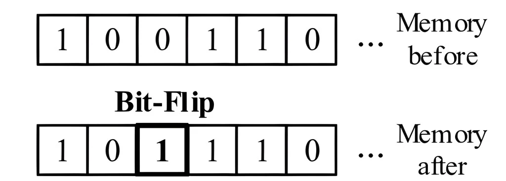

17 IA Robusta
Risorse: Slide, Video, Esercizi, Laboratori

Lo sviluppo di sistemi di apprendimento automatico robusti è diventato sempre più cruciale. Poiché questi sistemi vengono implementati in varie applicazioni critiche, dai veicoli autonomi alla diagnostica sanitaria, garantire la loro resilienza a guasti ed errori è fondamentale.
L’IA robusta, nel contesto di guasti hardware, guasti software ed errori, svolge un ruolo importante nel mantenimento dell’affidabilità, della sicurezza e delle prestazioni dei sistemi di apprendimento automatico. Affrontando le sfide poste da guasti hardware transitori, permanenti e intermittenti (Ahmadilivani et al. 2024), nonché bug, difetti di progettazione ed errori di implementazione nel software (H. Zhang 2008), le tecniche di intelligenza artificiale robuste consentono ai sistemi di apprendimento automatico di funzionare efficacemente anche in condizioni avverse.
Questo capitolo esplora i concetti fondamentali, le tecniche e gli strumenti per la creazione di sistemi di apprendimento automatico tolleranti ai guasti e resilienti agli errori. Consente a ricercatori e professionisti di sviluppare soluzioni di IA in grado di resistere alle complessità e alle incertezze degli ambienti del mondo reale.
Comprendere l’importanza di sistemi di IA robusti e resilienti nelle applicazioni del mondo reale.
Identificare e caratterizzare guasti hardware, guasti software e il loro impatto sui sistemi ML.
Riconoscere e sviluppare strategie difensive contro le minacce poste da attacchi avversari, avvelenamento dei dati e cambiamenti nella distribuzione.
Imparare tecniche per rilevare, mitigare e progettare sistemi ML tolleranti ai guasti.
Acquisire familiarità con strumenti e framework per studiare e migliorare la resilienza del sistema ML durante l’intero ciclo di vita dello sviluppo dell’IA.
17.1 Introduzione
Per IA robusta si intende la capacità di un sistema di mantenere le proprie prestazioni e affidabilità anche in presenza di errori. Un sistema di apprendimento automatico robusto è progettato per essere tollerante ai guasti e resiliente agli errori, in grado di funzionare efficacemente anche in condizioni avverse.
Man mano che i sistemi ML diventano sempre più integrati in vari aspetti della nostra vita, dai servizi basati su cloud ai dispositivi edge e ai sistemi embedded, l’impatto dei guasti hardware e software sulle loro prestazioni e affidabilità diventa più significativo. In futuro, man mano che i sistemi ML diventano più complessi e vengono implementati in applicazioni ancora più critiche, la necessità di progetti robusti e tolleranti ai guasti sarà fondamentale.
Si prevede che i sistemi ML svolgeranno ruoli cruciali nei veicoli autonomi, nelle città intelligenti, nell’assistenza sanitaria e nei domini dell’automazione industriale. In questi domini, le conseguenze dei guasti hardware o software possono essere gravi, potenzialmente causa di perdita di vite umane, danni economici o danni ambientali.
I ricercatori e gli ingegneri devono concentrarsi sullo sviluppo di tecniche avanzate per il rilevamento, l’isolamento e il ripristino dei guasti per mitigare questi rischi e garantire il funzionamento affidabile dei futuri sistemi ML.
Questo capitolo si concentrerà in modo specifico su tre categorie principali di guasti ed errori che possono influire sulla robustezza dei sistemi ML: guasti hardware, guasti software ed errori umani.
Guasti Hardware: Guasti transitori, permanenti e intermittenti possono influire sui componenti hardware di un sistema ML, corrompendo i calcoli e degradando le prestazioni.
Robustezza del Modello: I modelli ML possono essere vulnerabili ad attacchi avversari, avvelenamento dei dati e cambiamenti di distribuzione, che possono indurre classificazioni errate mirate, alterare il comportamento appreso del modello o compromettere l’integrità e l’affidabilità del sistema.
Guasti software: Bug, difetti di progettazione ed errori di implementazione nei componenti software, come algoritmi, librerie e framework, possono propagare errori e introdurre vulnerabilità.
Le sfide e gli approcci specifici per ottenere la robustezza possono variare a seconda della scala e dei vincoli del sistema ML. I sistemi di cloud computing o data center su larga scala possono concentrarsi sulla tolleranza ai guasti e sulla resilienza tramite ridondanza, elaborazione distribuita e tecniche avanzate di rilevamento e correzione degli errori. Al contrario, i dispositivi edge con risorse limitate o i sistemi embedded affrontano sfide uniche a causa della potenza di calcolo, della memoria e delle risorse energetiche limitate.
Indipendentemente dalla scala e dai vincoli, le caratteristiche chiave di un sistema ML robusto includono tolleranza ai guasti, resilienza agli errori e mantenimento delle prestazioni. Comprendendo e affrontando le sfide multiformi alla robustezza, possiamo sviluppare sistemi ML affidabili e sicuri in grado di navigare nelle complessità degli ambienti del mondo reale.
Questo capitolo non riguarda solo l’esplorazione di strumenti, framework e tecniche dei sistemi ML per rilevare e mitigare guasti, attacchi e cambiamenti durante la distribuzione. Si tratta di sottolineare il ruolo cruciale di ognuno di nel dare priorità alla resilienza durante tutto il ciclo di vita dello sviluppo dell’IA, dalla raccolta dati e dall’addestramento del modello all’implementazione e al monitoraggio. Affrontando in modo proattivo le sfide alla robustezza, possiamo sbloccare il pieno potenziale delle tecnologie ML garantendone al contempo un’implementazione sicura, affidabile e responsabile nelle applicazioni del mondo reale.
Mentre l’IA continua a plasmare il nostro futuro, il potenziale delle tecnologie ML è immenso. Ma è solo quando creiamo sistemi resilienti in grado di resistere alle sfide del mondo reale che possiamo davvero sfruttare questo potenziale. Questo è un fattore determinante per il successo e l’impatto sociale di questa tecnologia trasformativa ed è alla nostra portata.
17.2 Esempi del mondo reale
Ecco alcuni esempi reali di casi in cui guasti nell’hardware o nel software hanno causato problemi importanti nei sistemi ML in ambienti cloud, edge ed embedded:
17.2.1 Cloud
Nel febbraio 2017, Amazon Web Services (AWS) ha subito un’interruzione significativa a causa di un errore umano durante la manutenzione. Un tecnico ha inserito inavvertitamente un comando errato, causando la disconnessione di molti server. Questa interruzione ha interrotto molti servizi AWS, tra cui l’assistente basato sull’intelligenza artificiale di Amazon, Alexa. Di conseguenza, i dispositivi basati su Alexa, come Amazon Echo e prodotti di terze parti che utilizzano Alexa Voice Service, non hanno potuto rispondere alle richieste degli utenti per diverse ore. Questo incidente evidenzia il potenziale impatto degli errori umani sui sistemi ML basati su cloud e la necessità di procedure di manutenzione robuste e meccanismi di sicurezza.
In un altro esempio (Vangal et al. 2021), Facebook ha riscontrato un problema di “silent data corruption (SDC)” [corruzione silenziosa dei dati] all’interno della sua infrastruttura di query distribuita, come mostrato in Figura fig-sdc-example. L’infrastruttura di Facebook include un sistema di query che preleva ed esegue query SQL e simili a SQL su più set di dati utilizzando framework come Presto, Hive e Spark. Una delle applicazioni che ha utilizzato questa infrastruttura di query è stata un’applicazione di compressione per ridurre l’ingombro degli archivi dati. In questa applicazione di compressione, i file venivano compressi quando non venivano letti e decompressi quando veniva effettuata una richiesta di lettura. Prima della decompressione, la dimensione del file veniva controllata per assicurarsi che fosse maggiore di zero, indicando un file compresso valido con contenuti.
Tuttavia, in un caso, quando la dimensione del file veniva calcolata per un file valido di dimensioni diverse da zero, l’algoritmo di decompressione ha richiamato una funzione di potenza dalla libreria Scala. Inaspettatamente, la funzione Scala ha restituito un valore di dimensione zero per il file nonostante avesse una dimensione decompressa nota diversa da zero. Di conseguenza, la decompressione non è stata eseguita e il file non è stato scritto nel database di output. Questo problema si è manifestato sporadicamente, con alcune occorrenze dello stesso calcolo della dimensione del file che restituivano il valore corretto diverso da zero.
L’impatto di questa corruzione silenziosa dei dati è stato significativo, portando a file mancanti e dati errati nel database di output. L’applicazione che si basava sui file decompressi ha fallito a causa delle incongruenze dei dati. Nel caso di studio presentato nel documento, l’infrastruttura di Facebook, che consiste in centinaia di migliaia di server che gestiscono miliardi di richieste al giorno dalla loro enorme base di utenti, ha riscontrato un problema di corruzione silenziosa dei dati. Il sistema interessato elaborava query utente, caricamenti di immagini e contenuti multimediali, che richiedevano un’esecuzione rapida, affidabile e sicura.
Questo caso di studio illustra come la corruzione silenziosa dei dati può propagarsi attraverso più strati di uno stack applicativo, causando perdita di dati e guasti delle applicazioni in un sistema distribuito su larga scala. La natura intermittente del problema e la mancanza di messaggi di errore espliciti lo hanno reso particolarmente difficile da diagnosticare e risolvere. Ma questo non è limitato solo a Meta, anche altre aziende come Google che gestiscono ipercomputer IA affrontano questi problemi. Figura fig-sdc-jeffdean Jeff Dean, Chief Scientist presso Google DeepMind e Google Research, parla degli SDC e del loro impatto sui sistemi di apprendimento automatico.

17.2.2 Edge
Per quanto riguarda esempi di guasti ed errori nei sistemi edge ML, un’area che ha ricevuto notevole attenzione è il dominio delle auto a guida autonoma. I veicoli a guida autonoma si basano in larga misura su algoritmi di apprendimento automatico per la percezione, il processo decisionale e il controllo, rendendoli particolarmente sensibili all’impatto di guasti hardware e software. Negli ultimi anni, diversi incidenti di alto profilo che hanno coinvolto veicoli autonomi hanno evidenziato le sfide e i rischi associati all’implementazione di questi sistemi in ambienti reali.
A maggio 2016, si è verificato un incidente mortale quando una Tesla Model S con pilota automatico si è schiantata contro un autoarticolato bianco che attraversava l’autostrada. Il sistema Autopilot, che si basava su algoritmi di visione artificiale e apprendimento automatico, non è riuscito a riconoscere il rimorchio bianco sullo sfondo di un cielo luminoso. Il conducente, che secondo quanto riferito stava guardando un film al momento dell’incidente, non è intervenuto in tempo e il veicolo è entrato in collisione con il rimorchio a tutta velocità. Questo incidente ha sollevato preoccupazioni sui limiti dei sistemi di percezione basati sull’intelligenza artificiale e sulla necessità di solidi meccanismi di sicurezza nei veicoli autonomi. Ha inoltre evidenziato l’importanza della consapevolezza del conducente e la necessità di linee guida chiare sull’uso delle funzionalità di guida semi-autonoma, come mostrato in Figura fig-tesla-example.

A marzo 2018, un veicolo di prova a guida autonoma di Uber ha investito e ucciso un pedone che attraversava la strada a Tempe, in Arizona. L’incidente è stato causato da un difetto software nel sistema di riconoscimento degli oggetti del veicolo, che non è riuscito a identificare i pedoni in modo appropriato per evitarli come ostacoli. L’autista di sicurezza, che avrebbe dovuto monitorare il funzionamento del veicolo e intervenire se necessario, è stato trovato distratto durante l’incidente. Questo incidente ha portato ad un’ampia revisione del programma di guida autonoma di Uber e ha sollevato dubbi sulla prontezza della tecnologia dei veicoli autonomi per le strade pubbliche. Ha inoltre sottolineato la necessità di rigorosi test, convalide e misure di sicurezza nello sviluppo e nell’implementazione di sistemi di guida autonoma basati sull’intelligenza artificiale.
Nel 2021, Tesla ha dovuto affrontare un controllo più rigoroso a seguito di diversi incidenti che hanno coinvolto veicoli in modalità Autopilot. Alcuni di questi incidenti sono stati attribuiti a problemi con la capacità del sistema Autopilot di rilevare e rispondere a determinate situazioni stradali, come veicoli di emergenza fermi o ostacoli sulla strada. Ad esempio, nell’aprile 2021, una Tesla Model S si è schiantata contro un albero in Texas, uccidendo due passeggeri. I primi rapporti suggerivano che nessuno si trovasse al posto di guida al momento dell’incidente, sollevando interrogativi sull’uso e il potenziale uso improprio delle funzionalità Autopilot. Questi incidenti evidenziano le sfide in corso nello sviluppo di sistemi di guida autonoma affidabili e robusti e la necessità di normative chiare e di istruzione dei consumatori in merito alle capacità e ai limiti di queste tecnologie.
17.2.3 Embedded
I sistemi embedded, che spesso operano in ambienti con risorse limitate e applicazioni critiche per la sicurezza, hanno da tempo dovuto affrontare sfide legate a guasti hardware e software. Poiché le tecnologie di IA e apprendimento automatico sono sempre più integrate in questi sistemi, il potenziale di guasti ed errori assume nuove dimensioni, con l’aggiunta di complessità degli algoritmi di IA e la natura critica delle applicazioni in cui vengono distribuiti.
Consideriamo alcuni esempi, a partire dall’esplorazione dello spazio. La missione Mars Polar Lander della NASA nel 1999 ha subito un guasto catastrofico a causa di un errore software nel sistema di rilevamento dell’atterraggio (Figura fig-nasa-example). Il software di bordo della navicella spaziale ha interpretato erroneamente il rumore proveniente dall’apertura delle sue gambe di atterraggio come un segnale di atterraggio sulla superficie marziana. Di conseguenza, la navicella ha spento prematuramente i suoi motori, causando lo schianto sulla superficie. Questo incidente evidenzia l’importanza critica di una progettazione software solida e di test approfonditi nei sistemi embedded, in particolare quelli che operano in ambienti remoti e ostili. Poiché le capacità di IA sono integrate nelle future missioni spaziali, garantire l’affidabilità e la tolleranza ai guasti di questi sistemi sarà fondamentale per il successo della missione.
Tornando sulla Terra, nel 2015, un Boeing 787 Dreamliner ha subito un arresto elettrico completo durante un volo a causa di un bug del software nelle sue unità di controllo del generatore. Questo incidente sottolinea come i guasti software possano avere gravi conseguenze nei sistemi integrati complessi come quelli degli aeromobili. Poiché le tecnologie di IA sono sempre più applicate all’aviazione, come nei sistemi di volo autonomi e nella manutenzione predittiva, garantire la robustezza e l’affidabilità di questi sistemi sarà fondamentale per la sicurezza dei passeggeri.
“Se le quattro unità di controllo del generatore principale (associate ai generatori montati sul motore) fossero accese contemporaneamente, dopo 248 giorni di alimentazione continua, tutte e quattro le GCU entrerebbero in modalità fail-safe contemporaneamente, con conseguente perdita di tutta l’alimentazione elettrica CA indipendentemente dalla fase di volo.” – Direttiva della Federal Aviation Administration (2015)
Poiché le capacità di IA si integrano sempre di più nei sistemi embedded, il potenziale di guasti ed errori diventa più complesso e grave. Si immagini un pacemaker intelligente che ha un improvviso problema tecnico. Un paziente potrebbe morire a causa di tale effetto. Pertanto, gli algoritmi AI, come quelli utilizzati per la percezione, il processo decisionale e il controllo, introducono nuove fonti di potenziali guasti, come problemi relativi ai dati, incertezze del modello e comportamenti inaspettati nei casi limite. Inoltre, la natura opaca di alcuni modelli di IA può rendere difficile identificare e diagnosticare i guasti quando si verificano.
17.3 Guasti Hardware
I guasti hardware rappresentano una sfida significativa nei sistemi informatici, inclusi i sistemi tradizionali e ML. Questi guasti si verificano quando componenti fisici, come processori, moduli di memoria, dispositivi di archiviazione o interconnessioni, funzionano male o si comportano in modo anomalo. I guasti hardware possono causare calcoli errati, danneggiamento dei dati, crash del sistema o guasti completi del sistema, compromettendo l’integrità e l’affidabilità dei calcoli eseguiti (Jha et al. 2019). Un guasto completo del sistema si riferisce a una situazione in cui l’intero sistema informatico diventa non reattivo o inutilizzabile a causa di un malfunzionamento hardware critico. Questo tipo di guasto è il più grave, poiché rende il sistema inutilizzabile e può portare alla perdita o al danneggiamento dei dati, richiedendo un intervento manuale per riparare o sostituire i componenti difettosi.
Comprendere la tassonomia dei guasti hardware è essenziale per chiunque lavori con sistemi informatici, in particolare nel contesto dei sistemi ML. I sistemi ML si basano su architetture hardware complesse e calcoli su larga scala per addestrare e distribuire modelli che apprendono dai dati e fanno previsioni o decisioni intelligenti. Tuttavia, i guasti hardware possono introdurre errori e incongruenze nella pipeline MLOps, influenzando l’accuratezza, la robustezza e l’affidabilità dei modelli addestrati (G. Li et al. 2017).
Conoscere i diversi tipi di guasti hardware, i loro meccanismi e il loro potenziale impatto sul comportamento del sistema è fondamentale per sviluppare strategie efficaci per rilevarli, mitigarli e ripristinarli. Questa conoscenza è necessaria per progettare sistemi di elaborazione tolleranti ai guasti, implementare algoritmi ML robusti e garantire l’affidabilità complessiva delle applicazioni basate su ML.
Le sezioni seguenti esploreranno le tre categorie principali di guasti hardware: transitori, permanenti e intermittenti. Discuteremo le loro definizioni, caratteristiche, cause, meccanismi ed esempi di come si manifestano nei sistemi di elaborazione. Tratteremo anche tecniche di rilevamento e mitigazione specifiche per ogni tipo di guasto.
Guasti Transitori: I guasti transitori sono temporanei e non ricorrenti. Sono spesso causati da fattori esterni come raggi cosmici, interferenze elettromagnetiche o fluttuazioni di potenza. Un esempio comune di guasto transitorio è un bit flip, in cui un singolo bit in una posizione di memoria o registro cambia il suo valore in modo imprevisto. I guasti transitori possono causare calcoli errati o corruzione dei dati, ma non causano danni permanenti all’hardware.
Guasti permanenti: I guasti permanenti, chiamati anche errori hard, sono irreversibili e persistono nel tempo. Sono in genere causati da difetti fisici o usura dei componenti hardware. Esempi di guasti permanenti includono guasti bloccati, in cui un bit o un segnale è impostato in modo permanente su un valore specifico (ad esempio, sempre 0 o sempre 1) e guasti del dispositivo, come un processore malfunzionante o un modulo di memoria danneggiato. I guasti permanenti possono causare un guasto completo del sistema o un significativo degrado delle prestazioni.
Guasti Intermittenti: I guasti intermittenti sono guasti ricorrenti che compaiono e scompaiono in modo intermittente. Condizioni hardware instabili, come connessioni allentate, componenti obsoleti o difetti di fabbricazione, spesso ne sono la causa. I guasti intermittenti possono essere difficili da diagnosticare e riprodurre perché possono verificarsi sporadicamente e in condizioni specifiche. Esempi includono cortocircuiti intermittenti o problemi di resistenza dei contatti. I guasti intermittenti possono portare a un comportamento imprevedibile del sistema e a errori intermittenti.
Alla fine di questa discussione, i lettori avranno una solida comprensione della tassonomia dei guasti e della sua rilevanza per i sistemi di elaborazione e ML tradizionali. Questa base li aiuterà a prendere decisioni informate durante la progettazione, l’implementazione e la distribuzione di soluzioni tolleranti ai guasti, migliorando l’affidabilità e la credibilità dei loro sistemi di elaborazione e delle applicazioni ML.
17.3.1 Guasti Transitori
I guasti transitori nell’hardware possono manifestarsi in varie forme, ciascuna con le sue caratteristiche e cause uniche. Questi guasti sono di natura temporanea e non causano danni permanenti ai componenti hardware.
Definizione e Caratteristiche
Alcuni dei tipi comuni di guasti transitori includono Single Event Upset (SEU) causati da radiazioni ionizzanti, fluttuazioni di tensione (Reddi e Gupta 2013) dovute a rumore dell’alimentatore o interferenze elettromagnetiche, “Electromagnetic Interference (EMI)” indotte da campi elettromagnetici esterni, “Electrostatic Discharge (ESD)” risultanti da un improvviso flusso di elettricità statica, diafonia causata da accoppiamento di segnali involontari, rimbalzo di massa innescato dalla commutazione simultanea di più uscite, violazioni di temporizzazione dovute a violazioni dei vincoli di temporizzazione del segnale ed errori soft nella logica combinatoria che influenzano l’uscita dei circuiti logici (Mukherjee, Emer, e Reinhardt 2005). Comprendere questi diversi tipi di guasti transitori è fondamentale per progettare sistemi hardware robusti e resilienti che possano mitigarne l’impatto e garantire un funzionamento affidabile.
Tutti questi guasti transitori sono caratterizzati dalla loro breve durata e dalla loro natura non permanente. Non persistono né lasciano alcun impatto duraturo sull’hardware. Tuttavia, possono comunque portare a calcoli errati, corruzione dei dati o comportamento scorretto del sistema se non gestiti correttamente.

Cause di Guasti Transitori
I guasti transitori possono essere attribuiti a vari fattori esterni. Una causa comune sono i raggi cosmici, particelle ad alta energia provenienti dallo spazio. Quando queste particelle colpiscono aree sensibili dell’hardware, come celle di memoria o transistor, possono indurre disturbi di carica che alterano i dati memorizzati o trasmessi. Ciò è illustrato in Figura fig-transient-fault. Un’altra causa di guasti transitori è l’electromagnetic interference (EMI) [interferenza elettromagnetica] da dispositivi vicini o fluttuazioni di potenza. L’EMI può accoppiarsi con i circuiti e causare picchi di tensione o glitch che interrompono temporaneamente il normale funzionamento dell’hardware.
Meccanismi di Guasti Transitori
I guasti transitori possono manifestarsi attraverso meccanismi diversi a seconda del componente hardware interessato. Nei dispositivi di memoria come DRAM o SRAM, i guasti transitori spesso portano a inversioni di bit, in cui un singolo bit cambia il suo valore da 0 a 1 o viceversa. Ciò può corrompere i dati o le istruzioni archiviati. Nei circuiti logici, i guasti transitori possono causare glitch o picchi di tensione che si propagano attraverso la logica combinatoria, con conseguenti output o segnali di controllo errati. I guasti transitori possono anche influenzare i canali di comunicazione, causando errori di bit o perdite di pacchetti durante la trasmissione dei dati.
Impatto sui Sistemi ML
Un esempio comune di guasto transitorio è un’inversione di bit nella memoria principale. Se una struttura dati importante o un’istruzione critica viene archiviata nella posizione di memoria interessata, può portare a calcoli errati o a un comportamento errato del programma. Se si verifica un guasto transitorio nella memoria che archivia i pesi o i gradienti del modello. Ad esempio, un bit flip nella memoria che memorizza un contatore di loop può causare l’esecuzione indefinita del loop o la sua terminazione prematura. Errori transitori nei registri di controllo o nei bit di flag possono alterare il flusso di esecuzione del programma, causando salti imprevisti o decisioni di diramazione errate. Nei sistemi di comunicazione, gli errori transitori possono danneggiare i pacchetti di dati trasmessi, causando ritrasmissioni o perdita di dati.
Nei sistemi ML, gli errori transitori possono avere implicazioni significative durante la fase di training (He et al. 2023). Il training ML comporta calcoli iterativi e aggiornamenti dei parametri del modello basati su grandi set di dati. Se si verifica un errore transitorio nella memoria dei pesi o dei gradienti del modello, può causare aggiornamenti errati e compromettere la convergenza e l’accuratezza del processo di training. Figura fig-sdc-training-fault mostra un esempio concreto tratto dalla flotta di produzione di Google, in cui un’anomalia SDC ha causato una differenza significativa nella norma del gradiente.
Ad esempio, un’inversione di bit nella matrice dei pesi di una rete neurale può far sì che il modello apprenda pattern o associazioni errati, con conseguente peggioramento delle prestazioni (Wan et al. 2021). Errori transitori nella pipeline dei dati, come la corruzione dei campioni di training o delle etichette, possono anche introdurre rumore e influire sulla qualità del modello appreso.
Durante la fase di inferenza, gli errori transitori possono influire sull’affidabilità e l’attendibilità delle previsioni ML. Se si verifica un errore transitorio nella memoria dei parametri del modello addestrato o nel calcolo dei risultati dell’inferenza, può portare a previsioni errate o incoerenti. Ad esempio, un’inversione di bit nei valori di attivazione di una rete neurale può alterare l’output finale di classificazione o regressione (Mahmoud et al. 2020).
Nelle applicazioni “safety-critical”, come i veicoli autonomi o la diagnosi medica, i guasti transitori durante l’inferenza possono avere gravi conseguenze, portando a decisioni o azioni errate (G. Li et al. 2017; Jha et al. 2019). Garantire la resilienza dei sistemi ML contro i guasti transitori è fondamentale per mantenere l’integrità e l’affidabilità delle previsioni.
All’altro estremo, in ambienti con risorse limitate come TinyML, le “Binarized Neural Networks [BNNs]” [reti neurali binarizzate] (Courbariaux et al. 2016) sono emerse come una soluzione promettente. Le BNN rappresentano pesi di rete in precisione a bit singolo, offrendo efficienza computazionale e tempi di inferenza più rapidi. Tuttavia, questa rappresentazione binaria rende le BNN fragili agli errori di inversione di bit sui pesi della rete. Ad esempio, lavori precedenti (Aygun, Gunes, e De Vleeschouwer 2021) hanno dimostrato che un’architettura BNN a due strati nascosti per un’attività semplice come la classificazione MNIST subisce un degrado delle prestazioni dal 98% di accuratezza del test al 70% quando vengono inseriti errori soft di inversione di bit casuali tramite pesi del modello con una probabilità del 10%.
Per affrontare tali problemi è necessario considerare tecniche di training “flip-aware” o sfruttare paradigmi di elaborazione emergenti (ad esempio, elaborazione stocastica) per migliorare la tolleranza ai guasti e la robustezza, di cui parleremo in sec-hw-intermittent-detect-mitigate. Le direzioni di ricerca future mirano a sviluppare architetture ibride, nuove funzioni di attivazione e funzioni di perdita su misura per colmare il divario di accuratezza rispetto ai modelli a precisione completa mantenendo al contempo la loro efficienza computazionale.
17.3.2 Guasti Permanenti
I guasti permanenti sono difetti hardware che persistono e causano danni irreversibili ai componenti interessati. Questi guasti sono caratterizzati dalla loro natura persistente e richiedono la riparazione o la sostituzione dell’hardware difettoso per ripristinare la normale funzionalità del sistema.
Definizione e Caratteristiche
I guasti permanenti sono difetti hardware che causano malfunzionamenti persistenti e irreversibili nei componenti interessati. Il componente difettoso rimane non operativo finché un guasto permanente non viene riparato o sostituito. Questi guasti sono caratterizzati dalla loro natura coerente e riproducibile, il che significa che il comportamento difettoso viene osservato ogni volta che il componente interessato viene utilizzato. I guasti permanenti possono avere un impatto su vari componenti hardware, come processori, moduli di memoria, dispositivi di archiviazione o interconnessioni, causando crash del sistema, danneggiamento dei dati o guasto completo del sistema.
Un esempio notevole di guasto permanente è il bug Intel FDIV, scoperto nel 1994. Il bug FDIV era un difetto in alcune unità di divisione a virgola mobile (FDIV) dei processori Intel Pentium. Il bug causava risultati errati per specifiche operazioni di divisione, portando a calcoli imprecisi.
Il bug FDIV si è verificato a causa di un errore nella tabella di ricerca utilizzata dall’unità di divisione. In rari casi, il processore recuperava un valore errato dalla tabella di ricerca, con un risultato leggermente meno preciso del previsto. Ad esempio, Figura fig-permanent-fault mostra una frazione 4195835/3145727 tracciata su un processore Pentium con l’errore permanente FDIV. Le regioni triangolari sono quelle in cui si sono verificati calcoli errati. Idealmente, tutti i valori corretti verrebbero arrotondati a 1,3338, ma i risultati errati mostrano 1,3337, indicando un errore nella quinta cifra.
Sebbene l’errore fosse piccolo, poteva accumularsi su molte operazioni di divisione, portando a significative imprecisioni nei calcoli matematici. L’impatto del bug FDIV era significativo, soprattutto per le applicazioni che si basavano in modo massiccio sulla divisione precisa in virgola mobile, come simulazioni scientifiche, calcoli finanziari e progettazione assistita da computer. Il bug ha portato a risultati errati, che potrebbero avere gravi conseguenze in settori come la finanza o l’ingegneria.
Il bug Intel FDIV è un monito per il potenziale impatto di guasti permanenti sui sistemi ML. Nel contesto del ML, guasti permanenti nei componenti hardware possono portare a calcoli errati, influenzando l’accuratezza e l’affidabilità dei modelli. Ad esempio, se un sistema ML si basa su un processore con un’unità a virgola mobile difettosa, simile al bug Intel FDIV, potrebbe introdurre errori nei calcoli eseguiti durante l’addestramento o l’inferenza.
Questi errori possono propagarsi attraverso il modello, portando a previsioni imprecise o apprendimento distorto. Nelle applicazioni in cui il ML viene utilizzato per attività critiche, come la guida autonoma, la diagnosi medica o le previsioni finanziarie, le conseguenze di calcoli errati dovuti a guasti permanenti possono essere gravi.
È fondamentale che i professionisti del ML siano consapevoli del potenziale impatto dei guasti permanenti e incorporino tecniche di tolleranza ai guasti, come ridondanza hardware, meccanismi di rilevamento e correzione degli errori e progettazione di algoritmi robusti, per mitigare i rischi associati a questi guasti. Inoltre, test approfonditi e convalida dei componenti hardware ML possono aiutare a identificare e risolvere i guasti permanenti prima che influiscano sulle prestazioni e l’affidabilità del sistema.
Cause dei Guasti Permanenti
I guasti permanenti possono derivare da diverse cause, tra cui difetti di fabbricazione e meccanismi di usura. I difetti di fabbricazione sono difetti intrinseci introdotti durante il processo di fabbricazione dei componenti hardware. Questi difetti includono incisione impropria, doping non corretto o contaminazione, che portano a componenti non funzionali o parzialmente funzionali.
D’altro canto, i meccanismi di usura si verificano nel tempo man mano che i componenti hardware sono sottoposti a un uso prolungato e a stress. Fattori come elettromigrazione, rottura dell’ossido o stress termico possono causare una graduale degradazione dei componenti, portando infine a guasti permanenti.
Meccanismi dei Guasti Permanenti
I guasti permanenti possono manifestarsi attraverso vari meccanismi, a seconda della natura e della posizione del guasto. Gli “Stuck-at fault” [guasti bloccati] (Seong et al. 2010) sono guasti permanenti comuni in cui un segnale o una cella di memoria rimane fissata a un valore particolare (0 o 1) indipendentemente dagli input, come illustrato in Figura fig-stuck-fault.

I guasti bloccati possono verificarsi in porte logiche, celle di memoria o interconnessioni, causando calcoli errati o corruzione dei dati. Un altro meccanismo sono i guasti del dispositivo, in cui un componente, come un transistor o una cella di memoria, cessa completamente di funzionare. Ciò può essere dovuto a difetti di fabbricazione o grave usura. I guasti di “bridging” si verificano quando due o più linee di segnale sono collegate involontariamente, causando cortocircuiti o un comportamento logico errato.
Oltre ai guasti stuck-at, ci sono diversi altri tipi di guasti permanenti che possono influenzare i circuiti digitali e che possono avere un impatto su un sistema ML. I guasti di ritardo possono causare il superamento del limite specificato del ritardo di propagazione di un segnale, portando a violazioni di temporizzazione. I guasti di interconnessione, come guasti aperti (fili rotti), guasti resistivi (resistenza aumentata) o guasti capacitivi (capacità aumentata), possono causare problemi di integrità del segnale o violazioni di temporizzazione. Le celle di memoria possono anche subire vari guasti, tra cui guasti di transizione (impossibilità di cambiare stato), guasti di accoppiamento (interferenza tra celle adiacenti) e guasti sensibili al pattern di vicinato (guasti che dipendono dai valori delle celle vicine). Altri guasti permanenti possono verificarsi nella rete di alimentazione o nella rete di distribuzione del clock, influenzando la funzionalità e la temporizzazione del circuito.
Impatto sui Sistemi ML
I guasti permanenti possono influire gravemente sul comportamento e l’affidabilità dei sistemi di elaborazione. Ad esempio, un guasto nell’unità logica aritmetica (ALU) di un processore può causare calcoli errati, portando a risultati errati o crash del sistema. Un guasto permanente in un modulo di memoria, in una specifica cella di memoria, può danneggiare i dati archiviati, causando la perdita di dati o un comportamento errato del programma. Nei dispositivi di archiviazione, guasti permanenti come settori danneggiati o guasti del dispositivo possono causare l’inaccessibilità dei dati o la perdita completa delle informazioni archiviate. I guasti permanenti di interconnessione possono interrompere i canali di comunicazione, causando il danneggiamento dei dati o il blocco del sistema.
I guasti permanenti possono influire significativamente sui sistemi ML durante le fasi di addestramento e inferenza. Durante l’addestramento, guasti permanenti nelle unità di elaborazione o nella memoria possono causare calcoli errati, con conseguenti modelli danneggiati o non ottimali (He et al. 2023). Inoltre, i guasti nei dispositivi di archiviazione possono corrompere i dati di training o i parametri del modello archiviati, causando la perdita di dati o incongruenze del modello (He et al. 2023).
Durante l’inferenza, i guasti permanenti possono influire sull’affidabilità e la correttezza delle previsioni ML. I guasti nelle unità di elaborazione possono produrre risultati errati o causare guasti del sistema, mentre i guasti nella memoria che archivia i parametri del modello possono portare all’utilizzo di modelli corrotti o obsoleti per l’inferenza (J. J. Zhang et al. 2018).
Per mitigare l’impatto dei guasti permanenti nei sistemi ML, devono essere impiegate tecniche di tolleranza ai guasti sia a livello hardware che software. La ridondanza hardware, come la duplicazione di componenti critici o l’utilizzo di codici di correzione degli errori (Kim, Sullivan, e Erez 2015), può aiutare a rilevare e ripristinare i guasti permanenti. Le tecniche software, come i meccanismi di checkpoint e riavvio (Egwutuoha et al. 2013), possono consentire al sistema di recuperare da guasti permanenti tornando a uno stato salvato in precedenza. Il monitoraggio, il test e la manutenzione regolari dei sistemi ML possono aiutare a identificare e sostituire i componenti difettosi prima che causino interruzioni significative.
Progettare sistemi ML tenendo a mente la tolleranza ai guasti è fondamentale per garantirne l’affidabilità e la robustezza in presenza di guasti permanenti. Ciò può comportare l’incorporazione di ridondanza, meccanismi di rilevamento e correzione degli errori e strategie di sicurezza nell’architettura del sistema. Affrontando in modo proattivo le sfide poste dai guasti permanenti, i sistemi ML possono mantenere la loro integrità, accuratezza e affidabilità, anche di fronte a guasti hardware.
17.3.3 Guasti Intermittenti
I guasti intermittenti sono guasti hardware che si verificano sporadicamente e in modo imprevedibile in un sistema. Un esempio è illustrato in Figura fig-intermittent-fault, dove le crepe nel materiale possono introdurre una maggiore resistenza [elettrica] nei circuiti. Questi guasti sono particolarmente difficili da rilevare e diagnosticare perché compaiono e scompaiono in modo intermittente, rendendo difficile riprodurre e isolare la causa principale. I guasti intermittenti possono causare instabilità del sistema, corruzione dei dati e degrado delle prestazioni.

Definizione e Caratteristiche
I guasti intermittenti sono caratterizzati dalla loro natura sporadica e non deterministica. Si verificano in modo irregolare e possono apparire e scomparire spontaneamente, con durate e frequenze variabili. Questi guasti non si manifestano in modo coerente ogni volta che viene utilizzato il componente interessato, il che li rende più difficili da rilevare rispetto ai guasti permanenti. I guasti intermittenti possono interessare vari componenti hardware, tra cui processori, moduli di memoria, dispositivi di archiviazione o interconnessioni. Possono causare errori transitori, danneggiamento dei dati o comportamento imprevisto del sistema.
I guasti intermittenti possono avere un impatto significativo sul comportamento e l’affidabilità dei sistemi di elaborazione (Rashid, Pattabiraman, e Gopalakrishnan 2015). Ad esempio, un guasto intermittente nella logica di controllo di un processore può causare un flusso di programma irregolare, portando a calcoli errati o blocchi del sistema. I guasti intermittenti nei moduli di memoria possono danneggiare i valori dei dati, con conseguente esecuzione errata del programma o incoerenze nei dati. Nei dispositivi di archiviazione, i guasti intermittenti possono causare errori di lettura/scrittura o perdita di dati. Errori intermittenti nei canali di comunicazione possono causare corruzione dei dati, perdita di pacchetti o problemi di connettività intermittenti. Questi errori possono causare crash del sistema, problemi di integrità dei dati o degrado delle prestazioni, a seconda della gravità e della frequenza degli errori intermittenti.
Cause degli Errori Intermittenti
I guasti intermittenti possono derivare da diverse cause, sia interne che esterne, ai componenti hardware (Constantinescu 2008). Una causa comune è l’invecchiamento e l’usura dei componenti. Man mano che i dispositivi elettronici invecchiano, diventano più suscettibili a guasti intermittenti dovuti a meccanismi di degradazione come elettromigrazione, rottura dell’ossido o affaticamento dei giunti di saldatura.
Anche difetti di fabbricazione o variazioni di processo possono causare guasti intermittenti, in cui componenti marginali o borderline possono presentare guasti sporadici in condizioni specifiche, come mostrato in Figura fig-intermittent-fault-dram.

Fattori ambientali, come fluttuazioni di temperatura, umidità o vibrazioni, possono innescare guasti intermittenti alterando le caratteristiche elettriche dei componenti. Collegamenti allentati o degradati, come quelli nei connettori o nei circuiti stampati, possono causare guasti intermittenti.
Meccanismi dei Guasti Intermittenti
I guasti intermittenti possono manifestarsi attraverso vari meccanismi, a seconda della causa sottostante e del componente interessato. Un meccanismo è il circuito aperto o cortocircuito intermittente, in cui un percorso o una connessione del segnale viene temporaneamente interrotto o cortocircuitato, causando un comportamento irregolare. Un altro meccanismo è il guasto di ritardo intermittente (J. Zhang et al. 2018), in cui la temporizzazione dei segnali o i ritardi di propagazione diventano incoerenti, causando problemi di sincronizzazione o calcoli errati. I guasti intermittenti possono manifestarsi come bit flip [inversioni] transitori o errori soft nelle celle di memoria o nei registri, causando corruzione dei dati o esecuzione errata del programma.
Impatto sui Sistemi ML
Nel contesto dei sistemi ML, i guasti intermittenti possono introdurre sfide significative e avere un impatto sull’affidabilità e le prestazioni del sistema. Durante la fase di addestramento, i guasti intermittenti nelle unità di elaborazione o nella memoria possono portare a incongruenze nei calcoli, con conseguenti gradienti e aggiornamenti del peso errati o rumorosi. Ciò può influire sulla convergenza e l’accuratezza del processo di addestramento, portando a modelli sub-ottimali o instabili. Errori intermittenti di archiviazione o recupero dei dati possono corrompere i dati di training, introducendo rumore o errori che degradano la qualità dei modelli addestrati (He et al. 2023).
Durante la fase di inferenza, gli errori intermittenti possono influire sull’affidabilità e la coerenza delle previsioni ML. Gli errori nelle unità di elaborazione o nella memoria possono causare calcoli errati o corruzione dei dati, portando a previsioni errate o incoerenti. Gli errori intermittenti nella pipeline dei dati possono introdurre rumore o errori nei dati di input, influenzando l’accuratezza e la robustezza delle previsioni. Nelle applicazioni safety-critical, come veicoli autonomi o sistemi di diagnosi medica, gli errori intermittenti possono avere gravi conseguenze, portando a decisioni o azioni errate che compromettono la sicurezza e l’affidabilità.
Per mitigare l’impatto degli errori intermittenti nei sistemi ML è necessario un approccio poliedrico (Rashid, Pattabiraman, e Gopalakrishnan 2012). A livello hardware, tecniche come pratiche di progettazione robuste, selezione dei componenti e controllo ambientale possono aiutare a ridurre il verificarsi di guasti intermittenti. Meccanismi di ridondanza e correzione degli errori possono essere impiegati per rilevare e ripristinare guasti intermittenti. A livello software, monitoraggio del runtime, rilevamento delle anomalie e tecniche di tolleranza ai guasti possono essere incorporate nella pipeline ML. Ciò può includere tecniche come convalida dei dati, rilevamento di valori anomali, assemblaggio di modelli o adattamento del modello di runtime per gestire con eleganza i guasti intermittenti.
Progettare sistemi ML resilienti ai guasti intermittenti è fondamentale per garantirne affidabilità e robustezza. Ciò comporta l’incorporazione di tecniche di tolleranza ai guasti, monitoraggio del runtime e meccanismi adattivi nell’architettura del sistema. Affrontando in modo proattivo le sfide dei guasti intermittenti, i sistemi ML possono mantenere la loro accuratezza, coerenza e affidabilità, anche in caso di guasti hardware sporadici. Test, monitoraggio e manutenzione regolari dei sistemi ML possono aiutare a identificare e mitigare i guasti intermittenti prima che causino interruzioni significative o un degrado delle prestazioni.
17.3.4 Rilevamento e Mitigazione
Questa sezione esplora varie tecniche di rilevamento degli errori, inclusi approcci a livello hardware e software, e discute strategie di mitigazione efficaci per migliorare la resilienza dei sistemi ML. Inoltre, esamineremo le considerazioni sulla progettazione di sistemi ML resilienti, presenteremo casi di studio ed esempi e metteremo in evidenza le future direzioni di ricerca nei sistemi ML tolleranti agli errori.
Tecniche di Rilevamento degli Errori
Le tecniche di rilevamento degli errori sono importanti per identificare e localizzare gli errori hardware nei sistemi ML. Queste tecniche possono essere ampiamente categorizzate in approcci a livello hardware e software, ognuno dei quali offre capacità e vantaggi unici.
Rilevamento degli errori a livello hardware
Le tecniche di rilevamento degli errori a livello hardware sono implementate a livello fisico del sistema e mirano a identificare gli errori nei componenti hardware sottostanti. Esistono diverse tecniche hardware, ma in generale, possiamo raggruppare questi diversi meccanismi nelle seguenti categorie.
Built-in self-test (BIST) mechanisms: BIST è una tecnica potente per rilevare guasti nei componenti hardware (Bushnell e Agrawal 2002). Comporta l’incorporazione di circuiti hardware aggiuntivi nel sistema per l’autotest e il rilevamento dei guasti. BIST può essere applicato a vari componenti, come processori, moduli di memoria o circuiti integrati specifici per applicazione (ASIC). Ad esempio, BIST può essere implementato in un processore utilizzando catene di scansione, che sono percorsi dedicati che consentono l’accesso ai registri interni e alla logica per scopi di test.
Durante il processo BIST, vengono applicati pattern di test predefiniti ai circuiti interni del processore e le risposte vengono confrontate con i valori previsti. Eventuali discrepanze indicano la presenza di guasti. I processori Xeon di Intel, ad esempio, includono meccanismi BIST per testare i core della CPU, la memoria cache e altri componenti critici durante l’avvio del sistema.
Codici di rilevamento degli errori: I codici di rilevamento degli errori sono ampiamente utilizzati per rilevare errori di archiviazione e trasmissione dei dati (Hamming 1950). Questi codici aggiungono bit ridondanti ai dati originali, consentendo il rilevamento di errori di bit. Esempio: I controlli di parità sono una forma semplice di codice di rilevamento degli errori mostrato in Figura fig-parity. In uno schema di parità a bit singolo, un bit extra viene aggiunto a ogni parola di dati, rendendo il numero di 1 nella parola pari (parità pari) o dispari (parità dispari).

Quando si leggono i dati, la parità viene controllata e, se non corrisponde al valore previsto, viene rilevato un errore. Codici di rilevamento degli errori più avanzati, come i “cyclic redundancy checks (CRC)” [controlli di ridondanza ciclica], calcolano un checksum in base ai dati e lo aggiungono al messaggio. Il checksum viene ricalcolato all’estremità ricevente e confrontato con il checksum trasmesso per rilevare gli errori. I moduli di memoria con “Error-correcting code (ECC)” [codice di correzione degli errori], comunemente utilizzati nei server e nei sistemi critici, impiegano codici avanzati di rilevamento e correzione degli errori per rilevare e correggere errori a bit singolo o multi-bit nella memoria.
Ridondanza hardware e meccanismi di voto: La ridondanza hardware implica la duplicazione dei componenti critici e il confronto dei loro output per rilevare e mascherare i guasti (Sheaffer, Luebke, e Skadron 2007). I meccanismi di voto, come la “triple modular redundancy (TMR)” [ridondanza modulare tripla], impiegano più istanze di un componente e confrontano i loro output per identificare e mascherare comportamenti difettosi (Arifeen, Hassan, e Lee 2020).
In un sistema TMR, tre istanze identiche di un componente hardware, come un processore o un sensore, eseguono lo stesso calcolo in parallelo. Gli output di queste istanze vengono immessi in un circuito di voto, che confronta i risultati e seleziona il valore di maggioranza come output finale. Se una delle istanze produce un risultato non corretto a causa di un guasto, il meccanismo di voto maschera l’errore e mantiene l’output corretto. Il TMR è comunemente utilizzato nei sistemi aerospaziali e aeronautici, dove l’elevata affidabilità è fondamentale. Ad esempio, l’aereo Boeing 777 impiega il TMR nel suo sistema di computer di volo primario per garantire la disponibilità e la correttezza delle funzioni di controllo del volo (Yeh 1996).
I computer a guida autonoma di Tesla impiegano un’architettura hardware ridondante per garantire la sicurezza e l’affidabilità delle funzioni critiche, come percezione, processo decisionale e controllo del veicolo, come mostrato in Figura fig-tesla-dmr. Un componente chiave di questa architettura è l’utilizzo della “dual modular redundancy (DMR)” [ridondanza modulare duale] nei sistemi di computer di bordo dell’auto.

Nell’implementazione DMR di Tesla, due unità hardware identiche, spesso chiamate “computer ridondanti” o “unità di controllo ridondanti”, eseguono gli stessi calcoli in parallelo (Bannon et al. 2019). Ogni unità elabora in modo indipendente i dati dei sensori, esegue algoritmi di percezione e decisionali e genera comandi di controllo per gli attuatori del veicolo (ad esempio, sterzo, accelerazione e frenata).
Gli output di queste due unità ridondanti vengono costantemente confrontati per rilevare eventuali discrepanze o guasti. Se gli output corrispondono, il sistema presuppone che entrambe le unità funzionino correttamente e i comandi di controllo vengono inviati agli attuatori del veicolo. Tuttavia, se c’è una mancata corrispondenza tra gli output, il sistema identifica un potenziale guasto in una delle unità e adotta le misure appropriate per garantire un funzionamento sicuro.
Il sistema può impiegare meccanismi aggiuntivi per determinare quale unità è difettosa in una mancata corrispondenza. Ciò può comportare l’utilizzo di algoritmi diagnostici, il confronto degli output con i dati di altri sensori o sottosistemi o l’analisi della coerenza degli output nel tempo. Una volta identificata l’unità difettosa, il sistema può isolarla e continuare a funzionare utilizzando l’output dell’unità non difettosa.
Il DMR nel computer di guida autonoma di Tesla fornisce un ulteriore livello di sicurezza e tolleranza ai guasti. Avendo due unità indipendenti che eseguono gli stessi calcoli, il sistema può rilevare e mitigare i guasti che possono verificarsi in una delle unità. Questa ridondanza aiuta a prevenire singoli punti di guasto e garantisce che le funzioni critiche rimangano operative nonostante i guasti hardware.
Inoltre, Tesla incorpora anche meccanismi di ridondanza aggiuntivi oltre al DMR. Ad esempio, utilizzano alimentatori ridondanti, sistemi di sterzo e frenata e diverse suite di sensori (ad esempio, telecamere, radar e sensori a ultrasuoni) per fornire più livelli di tolleranza ai guasti. Queste ridondanze contribuiscono collettivamente alla sicurezza e all’affidabilità complessive del sistema di guida autonoma.
È importante notare che mentre DMR fornisce rilevamento guasti e un certo livello di tolleranza ai guasti, TMR può fornire un diverso livello di mascheramento dei guasti. In DMR, se entrambe le unità subiscono guasti simultanei o il guasto influisce sul meccanismo di confronto, il sistema potrebbe non essere in grado di identificare il guasto. Pertanto, gli SDC di Tesla si basano su una combinazione di DMR e altri meccanismi di ridondanza per raggiungere un elevato livello di tolleranza ai guasti.
L’uso di DMR nel computer a guida autonoma di Tesla evidenzia l’importanza della ridondanza hardware nelle applicazioni critiche per la sicurezza. Utilizzando unità di elaborazione ridondanti e confrontando i loro output, il sistema può rilevare e mitigare i guasti, migliorando la sicurezza e l’affidabilità complessive della funzionalità di guida autonoma.
Google utilizza “hot spare” ridondanti per gestire i problemi SDC nei suoi data center, migliorando così l’affidabilità delle funzioni critiche. Come illustrato in Figura fig-sdc-controller, durante la normale fase di addestramento, più “worker” di training sincroni funzionano in modo impeccabile. Tuttavia, se un worker diventa difettoso e causa SDC, un verificatore SDC identifica automaticamente i problemi. Dopo aver rilevato l’SDC, il verificatore SDC sposta il training su un hot spare e invia la macchina difettosa per la riparazione. Questa ridondanza salvaguarda la continuità e l’affidabilità del training ML, riducendo al minimo i tempi di inattività e preservando l’integrità dei dati.
Watchdog timer: I watchdog timer sono componenti hardware che monitorano l’esecuzione di attività o processi critici (Pont e Ong 2002). Sono comunemente utilizzati per rilevare e ripristinare guasti software o hardware che causano la mancata risposta di un sistema o il suo blocco in un ciclo infinito. In un sistema embedded, un watchdog timer può essere configurato per monitorare l’esecuzione del loop principale, come illustrato in Figura fig-watchdog. Il software reimposta periodicamente il watchdog timer per indicare che funziona correttamente. Supponiamo che il software non riesca a reimpostare il timer entro un limite di tempo specificato (periodo di timeout). In tal caso, il watchdog timer presuppone che il sistema abbia riscontrato un guasto e attiva un’azione di ripristino predefinita, come il reset del sistema o il passaggio a un componente di backup. I watchdog timer sono ampiamente utilizzati nell’elettronica automobilistica, nei sistemi di controllo industriale e in altre applicazioni critiche per la sicurezza per garantire il rilevamento e il ripristino tempestivi dai guasti.
Rilevamento guasti a livello software
Le tecniche di rilevamento degli errori a livello software si basano su algoritmi software e meccanismi di monitoraggio per identificare gli errori di sistema. Queste tecniche possono essere implementate a vari livelli dello stack software, tra cui il sistema operativo, il middleware o il livello dell’applicazione.
Monitoraggio del runtime e rilevamento delle anomalie: Il monitoraggio del runtime comporta l’osservazione continua del comportamento del sistema e dei suoi componenti durante l’esecuzione (Francalanza et al. 2017). Aiuta a rilevare anomalie, errori o comportamenti imprevisti che potrebbero indicare la presenza di errori. Ad esempio, si consideri un sistema di classificazione delle immagini basato su ML distribuito in un’auto a guida autonoma. Il monitoraggio del runtime può essere implementato per tracciare le prestazioni e il comportamento del modello di classificazione (Mahmoud et al. 2021).
Gli algoritmi di rilevamento delle anomalie possono essere applicati alle previsioni del modello o alle attivazioni di livelli intermedi, come il rilevamento statistico di valori anomali o approcci basati sull’apprendimento automatico (ad esempio, One-Class SVM o Autoencoders) (Chandola, Banerjee, e Kumar 2009). Figura fig-ad mostra un esempio di rilevamento delle anomalie. Supponiamo che il sistema di monitoraggio rilevi una deviazione significativa dai pattern previsti, come un calo improvviso dell’accuratezza della classificazione o campioni fuori distribuzione. In tal caso, può generare un “alert” che indica un potenziale errore nel modello o nella pipeline dei dati di input. Questo rilevamento precoce consente di applicare strategie di intervento tempestivo e di mitigazione degli errori.
Controlli di coerenza e convalida dei dati: I controlli di coerenza e le tecniche di convalida dei dati garantiscono l’integrità e la correttezza dei dati in diverse fasi di elaborazione in un sistema ML (Lindholm et al. 2019). Questi controlli aiutano a rilevare danneggiamenti dei dati, incongruenze o errori che potrebbero propagarsi e influenzare il comportamento del sistema. Esempio: In un sistema ML distribuito in cui più nodi collaborano per addestrare un modello, è possibile implementare controlli di coerenza per convalidare l’integrità dei parametri condivisi del modello. Ogni nodo può calcolare un checksum o un hash dei parametri del modello prima e dopo l’iterazione di addestramento, come mostrato in Figura fig-ad. Eventuali incongruenze o danneggiamenti dei dati possono essere rilevati confrontando i checksum tra i nodi. Inoltre, è possibile applicare controlli di intervallo ai dati di input e agli output del modello per garantire che rientrino nei limiti previsti. Ad esempio, se il sistema di percezione di un veicolo autonomo rileva un oggetto con dimensioni o velocità non realistiche, può indicare un errore nei dati del sensore o negli algoritmi di percezione (Wan et al. 2023).
Meccanismi di heartbeat e timeout: I meccanismi di heartbeat e timeout sono comunemente utilizzati per rilevare errori nei sistemi distribuiti e garantire la vitalità e la reattività dei componenti (Kawazoe Aguilera, Chen, e Toueg 1997). Sono molto simili ai timer watchdog presenti nell’hardware. Ad esempio, in un sistema ML distribuito, in cui più nodi collaborano per eseguire attività quali pre-elaborazione dei dati, training del modello o inferenza, è possibile implementare meccanismi heartbeat per monitorare lo stato e la disponibilità di ciascun nodo. Ogni nodo invia periodicamente un messaggio heartbeat a un coordinatore centrale o ai suoi nodi peer, indicando il suo stato e la sua disponibilità. Supponiamo che un nodo non riesca a inviare un heartbeat entro un periodo di timeout specificato, come mostrato in Figura fig-heartbeat. In tal caso, viene considerato difettoso e possono essere intraprese azioni appropriate, come la ridistribuzione del carico di lavoro o l’avvio di un meccanismo di “failover”. I timeout possono anche essere utilizzati per rilevare e gestire componenti bloccati o non reattivi. Ad esempio, se un processo di caricamento dati supera una soglia di timeout predefinita, potrebbe indicare un errore nella pipeline dati e il sistema può adottare misure correttive.
Tecniche di “Software-implemented fault tolerance (SIFT)”: Le tecniche SIFT introducono meccanismi di ridondanza e rilevamento degli errori a livello software per migliorare l’affidabilità e la tolleranza agli errori del sistema (Reis et al. 2005). Esempio: La programmazione N-version è una tecnica SIFT in cui più versioni di componenti software funzionalmente equivalenti vengono sviluppate in modo indipendente da team diversi. Questo può essere applicato a componenti critici come il motore di inferenza del modello in un sistema ML. Più versioni del motore di inferenza possono essere eseguite in parallelo e i loro output possono essere confrontati per coerenza. È considerato il risultato corretto se la maggior parte delle versioni produce lo stesso output. Se c’è una discrepanza, indica un potenziale errore in una o più versioni e possono essere attivati meccanismi di gestione degli errori appropriati. Un altro esempio è l’utilizzo di codici di correzione degli errori basati su software, come i codici Reed-Solomon (Plank 1997), per rilevare e correggere errori nell’archiviazione o nella trasmissione dei dati, come mostrato in Figura fig-Reed-Solomon. Questi codici aggiungono ridondanza ai dati, consentendo di rilevare e correggere determinati errori e migliorare la tolleranza agli errori del sistema.
In questo Colab, si svolge il ruolo di un detective di guasti IA! Si costruirà un rilevatore di anomalie basato su autoencoder per individuare gli errori nei dati sulla salute cardiaca. Si scopre come identificare i malfunzionamenti nei sistemi ML, un’abilità fondamentale per creare un’IA affidabile. Utilizzeremo Keras Tuner per mettere a punto l’autoencoder per un rilevamento di guasti di prim’ordine. Questa esperienza si collega direttamente al capitolo Robust AI, dimostrando l’importanza del rilevamento di guasti in applicazioni reali come l’assistenza sanitaria e i sistemi autonomi. Preparatevi a rafforzare l’affidabilità delle creazioni IA!

17.3.5 Riepilogo
Tabella tbl-fault_types fornisce un’analisi comparativa estesa di guasti transitori, permanenti e intermittenti. Descrive le caratteristiche o dimensioni primarie che distinguono questi tipi di guasti. Qui, riassumiamo le dimensioni rilevanti che abbiamo esaminato ed esploriamo le sfumature che differenziano i guasti transitori, permanenti e intermittenti in modo più dettagliato.
| Dimensione | Guasti Transitori | Guasti Permanenti | Guasti intermittenti |
|---|---|---|---|
| Durata | Di breve durata, temporaneo | Persistente, rimane fino alla riparazione o alla sostituzione | Sporadica, appare e scompare in modo intermittente |
| Persistenza | Scompare dopo che la condizione di errore è passata | È costantemente presente finché non viene affrontato | Si ripete in modo irregolare, non sempre presente |
| Cause | Fattori esterni (ad esempio, interferenza elettromagnetica raggi cosmici) | Difetti hardware, danni fisici, usura | Condizioni hardware instabili, connessioni allentate, componenti obsoleti |
| Manifestazione | Bit flip, glitch, danneggiamento temporaneo dei dati | Errori bloccati, componenti rotti, guasti completi del dispositivo | Bit flip occasionali, problemi di segnale intermittenti, malfunzionamenti sporadici |
| Impatto sui Sistemi ML | Introduce errori temporanei o rumore nei calcoli | Causa errori o guasti costanti, che influiscono sull’affidabilità | Porta a errori sporadici e imprevedibili, difficili da diagnosticare e mitigare |
| Rilevamento | Codici di rilevamento degli errori, confronto con i valori previsti | Autotest integrati, codici di rilevamento degli errori, controlli di coerenza | Monitoraggio delle anomalie, analisi di pattern di errore e correlazioni |
| Mitigazione | Codici di correzione degli errori, ridondanza, checkpoint e riavvio | Riparazione o sostituzione hardware, ridondanza dei componenti, meccanismi di failover | Progettazione robusta, controllo ambientale, monitoraggio del runtime, tecniche di tolleranza agli errori |
17.4 Robustezza del Modello ML
17.4.1 Attacchi Avversari
Definizione e Caratteristiche
Gli attacchi avversari mirano a indurre i modelli a fare previsioni errate fornendo loro input ingannevoli appositamente creati (chiamati esempi avversari) (Parrish et al. 2023). Aggiungendo lievi perturbazioni ai dati di input, gli avversari possono “hackerare” il riconoscimento di pattern di un modello e ingannarlo. Si tratta di tecniche sofisticate in cui piccole, spesso impercettibili modifiche ai dati di input possono indurre un modello ML a fare una previsione errata, come mostrato in Figura fig-adversarial-attack-noise-example.

È possibile generare prompt che portano a immagini non sicure in modelli testo-immagine come DALLE (Ramesh et al. 2021) o Stable Diffusion (Rombach et al. 2022). Ad esempio, alterando i valori dei pixel di un’immagine, gli aggressori possono ingannare un sistema di riconoscimento facciale facendogli identificare un volto come una persona diversa.
Gli attacchi avversari sfruttano il modo in cui i modelli ML apprendono e prendono decisioni durante l’inferenza. Questi modelli funzionano sul principio di riconoscimento di pattern nei dati. Un avversario crea input speciali con perturbazioni per confondere il riconoscimento degli pattern del modello, in pratica “hackerando” le percezioni del modello.
Gli attacchi avversari rientrano in diversi scenari:
Attacchi Whitebox: L’attaccante conosce perfettamente il funzionamento interno del modello target, inclusi i dati di training, i parametri e l’architettura (Ye e Hamidi 2021). Questo accesso completo crea condizioni favorevoli per gli aggressori per sfruttare le vulnerabilità del modello. L’attaccante può usare debolezze specifiche e sottili per creare esempi avversari efficaci.
Attacchi Blackbox: A differenza degli attacchi White-box, i Black-box implicano che l’attaccante abbia poca o nessuna conoscenza del modello target (Guo et al. 2019). Per eseguire l’attacco, l’attore avversario deve osservare attentamente il comportamento dell’output del modello.
Attacchi Greybox: Si collocano tra gli attacchi Blackbox e Whitebox. L’attaccante ha solo una conoscenza parziale della progettazione interna del modello target (Xu et al. 2021). Ad esempio, l’attaccante potrebbe avere conoscenza dei dati di training ma non dell’architettura o dei parametri. Nel mondo reale, gli attacchi pratici rientrano solitamente nelle categorie black-box o grey-box.
Il panorama dei modelli di apprendimento automatico è complesso e ampio, soprattutto data la loro relativamente recente integrazione nelle applicazioni commerciali. Questa rapida adozione, sebbene trasformativa, ha portato alla luce numerose vulnerabilità all’interno di questi modelli. Di conseguenza, sono emersi vari metodi di attacco avversari, ognuno dei quali sfrutta strategicamente diversi aspetti di vari modelli. Di seguito, evidenziamo un sottoinsieme di questi metodi, che mostra la natura multiforme degli attacchi avversari sui modelli di apprendimento automatico:
Le Generative Adversarial Network (GAN) sono modelli di deep learning costituiti da due reti in competizione tra loro: un generatore e un discriminatore (Goodfellow et al. 2020). Il generatore cerca di sintetizzare dati realistici mentre il discriminatore valuta se sono reali o falsi. Le GAN possono essere utilizzate per creare esempi avversari. La rete del generatore è addestrata per produrre input che il modello target classifica erroneamente. Queste immagini generate da GAN possono quindi attaccare un classificatore target o un modello di rilevamento. Il generatore e il modello target sono impegnati in un processo competitivo, con il generatore che migliora continuamente la sua capacità di creare esempi ingannevoli e il modello target che aumenta la sua resistenza a tali esempi. Le reti GAN forniscono un potente framework per la creazione di input avversari complessi e diversificati, dimostrando l’adattabilità dei modelli generativi nel panorama avversario.
I Transfer Learning Adversarial Attacks [attacchi avversari di apprendimento di trasferimento] sfruttano la conoscenza trasferita da un modello pre-addestrato a un modello target, creando esempi avversari che possono ingannare entrambi i modelli. Questi attacchi rappresentano una preoccupazione crescente, in particolare quando gli avversari hanno conoscenza dell’estrattore di feature ma non hanno accesso alla testa di classificazione (la parte o il layer responsabile della creazione delle classificazioni finali). Denominate “attacchi headless”, queste strategie avversarie trasferibili sfruttano le capacità espressive degli estrattori di feature per creare perturbazioni, senza tenere conto dello spazio delle etichette o dei dati di addestramento. L’esistenza di tali attacchi sottolinea l’importanza di sviluppare difese robuste per le applicazioni di apprendimento tramite trasferimento, soprattutto perché i modelli pre-addestrati sono comunemente utilizzati (Abdelkader et al. 2020).
Meccanismi degli Attacchi Avversari
Attacchi Basati sul Gradiente
Una categoria importante di attacchi avversari è quella degli attacchi basati sul gradiente. Questi attacchi sfruttano i gradienti della funzione di perdita del modello ML per creare esempi avversari. Il Fast Gradient Sign Method (FGSM) è una tecnica ben nota in questa categoria. FGSM perturba i dati di input aggiungendo un piccolo rumore nella direzione del gradiente, con l’obiettivo di massimizzare l’errore di previsione del modello. FGSM può generare rapidamente esempi avversari, come mostrato in Figura fig-gradient-attack, eseguendo un singolo passaggio nella direzione del gradiente.
Un’altra variante, l’attacco “Projected Gradient Descent (PGD)”, estende FGSM applicando iterativamente la fase di aggiornamento del gradiente, consentendo esempi avversari più raffinati e potenti. L’attacco “Jacobian-based Saliency Map (JSMA)” è un altro approccio basato sul gradiente che identifica le caratteristiche di input più influenti e le perturba per creare esempi avversari.
Attacchi Basati sull’Ottimizzazione
Questi attacchi formulano la generazione di esempi avversari come un problema di ottimizzazione. L’attacco Carlini e Wagner (C&W) è un esempio importante in questa categoria. Trova la perturbazione più piccola che può causare una classificazione errata mantenendo la somiglianza percettiva con l’input originale. L’attacco C&W impiega un processo di ottimizzazione iterativo per ridurre al minimo la perturbazione massimizzando al contempo l’errore di previsione del modello.
Un altro approccio basato sull’ottimizzazione è l’Elastic Net Attack to DNNs (EAD), che incorpora la regolarizzazione elastica della rete per generare esempi avversari con perturbazioni sparse.
Attacchi Basati sul Trasferimento
Gli attacchi basati sul trasferimento sfruttano la proprietà di trasferibilità degli esempi avversari. La trasferibilità si riferisce al fenomeno per cui gli esempi avversari creati per un modello ML possono spesso ingannare altri modelli, anche se hanno architetture diverse o sono stati addestrati su set di dati diversi. Ciò consente agli aggressori di generare esempi avversari utilizzando un modello surrogato e quindi trasferirli al modello target senza richiedere l’accesso diretto ai suoi parametri o gradienti. Gli attacchi basati sul trasferimento evidenziano la generalizzazione delle vulnerabilità avversarie su diversi modelli e il potenziale per attacchi black-box.
Attacchi nel Mondo Fisico
Gli attacchi nel mondo fisico portano gli esempi avversari nel regno degli scenari del mondo reale. Questi attacchi comportano la creazione di oggetti fisici o manipolazioni che possono ingannare i modelli ML quando vengono catturati da sensori o telecamere. Le patch avversarie, ad esempio, sono piccole patch progettate con cura che possono essere posizionate sugli oggetti per ingannare i modelli di rilevamento o classificazione degli oggetti. Quando vengono applicate a oggetti del mondo reale, queste patch possono causare una classificazione errata dei modelli o il mancato rilevamento accurato degli oggetti. Gli oggetti avversari, come sculture stampate in 3D o segnali stradali modificati, possono anche essere creati per ingannare i sistemi ML in ambienti fisici.
Riepilogo
Tabella tbl-attack_types una panoramica concisa delle diverse categorie di attacchi avversari, tra cui attacchi basati su gradiente (FGSM, PGD, JSMA), attacchi basati sull’ottimizzazione (C&W, EAD), attacchi basati sul trasferimento e attacchi nel mondo fisico (patch e oggetti avversari). Ogni attacco viene brevemente descritto, evidenziandone le caratteristiche e i meccanismi principali.
| Categoria di attacco | Nome attacco | Descrizione |
|---|---|---|
| Basato sul gradiente | Fast Gradient Sign Method (FGSM) Projected Gradient Descent (PGD) Jacobian-based Saliency Map Attack (JSMA) | Perturba i dati di input aggiungendo un piccolo rumore nella direzione del gradiente per massimizzare l’errore di previsione. Estende FGSM applicando iterativamente il passaggio di aggiornamento del gradiente per esempi avversari più raffinati. Identifica le caratteristiche di input influenti e le perturba per creare esempi avversari. |
| Basato sull’ottimizzazione | Carlini and Wagner (C&W) Attack Elastic Net Attack to DNNs (EAD) | Trova la perturbazione più piccola che causa una classificazione errata mantenendo la somiglianza percettiva. Incorpora la regolarizzazione elastica della rete per generare esempi avversari con perturbazioni sparse. |
| Basato sul trasferimento | Transferability-based Attacks | Sfrutta la trasferibilità di esempi avversari su modelli diversi, consentendo attacchi black-box. |
| Mondo fisico | Adversarial Patches Adversarial Objects | Piccole patch attentamente progettate, posizionate sugli oggetti per ingannare i modelli di rilevamento o classificazione degli oggetti. Oggetti fisici (ad esempio, sculture stampate in 3D, segnali stradali modificati) creati per ingannare i sistemi ML in scenari del mondo reale. |
I meccanismi degli attacchi avversari rivelano l’intricata interazione tra i limiti decisionali del modello ML, i dati di input e gli obiettivi dell’attaccante. Manipolando attentamente i dati di input, gli aggressori possono sfruttare le sensibilità e i punti ciechi del modello, portando a previsioni errate. Il successo degli attacchi avversari evidenzia la necessità di una comprensione più approfondita delle proprietà di robustezza e generalizzazione dei modelli ML.
La difesa dagli attacchi avversari richiede un approccio multiforme. L’addestramento avversario è una strategia di difesa comune in cui i modelli vengono addestrati su esempi avversari per migliorare la robustezza. Esporre il modello a esempi avversari durante l’addestramento gli insegna a classificarli correttamente e a diventare più resiliente agli attacchi. La distillazione difensiva, la preelaborazione degli input e i metodi di ensemble sono altre tecniche che possono aiutare a mitigare l’impatto degli attacchi avversari.
Man mano che l’apprendimento automatico avversario si evolve, i ricercatori esplorano nuovi meccanismi di attacco e sviluppano difese più sofisticate. La corsa agli armamenti tra aggressori e difensori spinge la necessità di innovazione e vigilanza costanti nel proteggere i sistemi ML dalle minacce avversarie. Comprendere i meccanismi degli attacchi avversari è fondamentale per sviluppare modelli ML robusti e affidabili in grado di resistere al panorama in continua evoluzione degli esempi avversari.
Impatto sui Sistemi ML
Gli attacchi avversari sui sistemi di apprendimento automatico sono emersi come una preoccupazione significativa negli ultimi anni, evidenziando le potenziali vulnerabilità e i rischi associati all’adozione diffusa delle tecnologie ML. Questi attacchi comportano perturbazioni attentamente studiate per immettere dati che possono ingannare o fuorviare i modelli ML, portando a previsioni errate o classificazioni errate, come mostrato in Figura fig-adversarial-googlenet. L’impatto degli attacchi avversari sui sistemi ML è di vasta portata e può avere gravi conseguenze in vari domini.
Un esempio lampante dell’impatto degli attacchi avversari è stato dimostrato dai ricercatori nel 2017. Hanno sperimentato piccoli adesivi in bianco e nero sui segnali di stop (Eykholt et al. 2017). All’occhio umano, questi adesivi non oscuravano il segnale né ne impedivano l’interpretazione. Tuttavia, quando le immagini dei segnali di stop modificati dagli adesivi sono state inserite nei modelli ML standard di classificazione dei segnali stradali, è emerso un risultato scioccante. I modelli hanno classificato erroneamente i segnali di stop come segnali di limite di velocità nell’85% dei casi.
Questa dimostrazione ha fatto luce sul potenziale allarmante di semplici adesivi avversari per ingannare i sistemi ML e fargli interpretare male i segnali stradali critici. Le implicazioni di tali attacchi nel mondo reale sono significative, in particolare nel contesto dei veicoli autonomi. Se utilizzati su strade reali, questi adesivi avversari potrebbero far sì che le auto a guida autonoma interpretino erroneamente i segnali di stop come limiti di velocità, portando a situazioni pericolose, come mostrato in Figura fig-graffiti. I ricercatori hanno avvertito che ciò potrebbe causare arresti a rotazione o accelerazioni involontarie negli incroci, mettendo a repentaglio la sicurezza pubblica.

Il caso di studio degli adesivi avversari sui segnali di stop fornisce un’illustrazione concreta di come gli esempi avversari sfruttino il modo in cui i modelli ML riconoscono i pattern. Manipolando in modo sottile i dati di input in modi invisibili agli esseri umani, gli aggressori possono indurre previsioni errate e creare gravi rischi, specialmente in applicazioni critiche per la sicurezza come i veicoli autonomi. La semplicità dell’attacco evidenzia la vulnerabilità dei modelli ML anche a piccole modifiche nell’input, sottolineando la necessità di difese robuste contro tali minacce.
L’impatto degli attacchi avversari si estende oltre il degrado delle prestazioni del modello. Questi attacchi sollevano notevoli preoccupazioni in termini di sicurezza e protezione, in particolare nei domini in cui i modelli ML sono utilizzati per prendere decisioni critiche. Nelle applicazioni sanitarie, gli attacchi avversari sui modelli di imaging medico potrebbero portare a diagnosi errate o raccomandazioni di trattamento errate, mettendo a repentaglio il benessere del paziente (M.-J. Tsai, Lin, e Lee 2023). Nei sistemi finanziari, gli attacchi avversari potrebbero consentire frodi o manipolazioni di algoritmi di trading, con conseguenti perdite economiche sostanziali.
Inoltre, le vulnerabilità avversarie compromettono l’affidabilità e l’interpretabilità dei modelli ML. Se perturbazioni attentamente realizzate possono facilmente ingannare i modelli, la fiducia nelle loro previsioni e decisioni si erode. Gli esempi avversari espongono la dipendenza dei modelli da pattern superficiali e l’incapacità di catturare i veri concetti sottostanti, mettendo in discussione l’affidabilità dei sistemi ML (Fursov et al. 2021).
La difesa dagli attacchi avversari richiede spesso risorse computazionali aggiuntive e può influire sulle prestazioni complessive del sistema. Tecniche come l’addestramento avversariale, in cui i modelli vengono addestrati su esempi avversari per migliorare la robustezza, possono aumentare significativamente i tempi di addestramento e i requisiti computazionali (Bai et al. 2021). I meccanismi di rilevamento e mitigazione del runtime, come la preelaborazione dell’input (Addepalli et al. 2020) o i controlli di coerenza delle previsioni, introducono latenza e influenzano le prestazioni in tempo reale dei sistemi ML.
La presenza di vulnerabilità avversarie complica anche l’implementazione e la manutenzione dei sistemi ML. I progettisti e gli operatori di sistema devono considerare il potenziale di attacchi avversari e incorporare difese e meccanismi di monitoraggio appropriati. Aggiornamenti regolari e riqualificazione dei modelli diventano necessari per adattarsi alle nuove tecniche avversarie e mantenere la sicurezza e le prestazioni del sistema nel tempo.
L’impatto degli attacchi avversari sui sistemi ML è significativo e multiforme. Questi attacchi espongono le vulnerabilità dei modelli ML, dal degrado delle prestazioni del modello e dall’aumento di preoccupazioni sulla sicurezza e la protezione alla sfida dell’affidabilità e dell’interpretabilità del modello. Sviluppatori e ricercatori devono dare priorità allo sviluppo di difese e contromisure robuste per mitigare i rischi posti dagli attacchi avversari. Affrontando queste sfide, possiamo creare sistemi ML più sicuri, affidabili e degni di fiducia in grado di resistere al panorama in continua evoluzione delle minacce avversarie.
Preparatevi a diventare un avversario dell’IA! In questo Colab, si diventerà un hacker white-box, imparando a creare attacchi che ingannano i modelli di classificazione delle immagini. Ci concentreremo sul Fast Gradient Sign Method (FGSM), sfruttando i gradienti di un modello contro di esso! Si distorceranno deliberatamente le immagini con piccole perturbazioni, osservando come inganneranno sempre più intensamente l’IA. Questo esercizio pratico evidenzia l’importanza di creare un’IA sicura, un’abilità critica man mano che l’IA si integra nelle auto e nell’assistenza sanitaria. Il Colab si collega direttamente al capitolo Robust AI del libro, spostando gli attacchi avversari dalla teoria alla esperienza pratica.

Pensate di poter superare in astuzia un’IA? In questo Colab, scopriremo come ingannare i modelli di classificazione delle immagini con attacchi avversari. Utilizzeremo metodi come FGSM per modificare le immagini e ingannare sottilmente l’IA. Scopriremo come progettare patch di immagini ingannevoli e osserveremo la sorprendente vulnerabilità di questi potenti modelli. Questa è una conoscenza fondamentale per costruire sistemi di IA veramente robusti!

17.4.2 Avvelenamento dei Dati
Definizione e Caratteristiche
L’avvelenamento dei dati è un attacco in cui i dati di addestramento vengono manomessi, portando alla compromissione del modello (Biggio, Nelson, e Laskov 2012), come mostrato in Figura fig-poisoning-example. Gli aggressori possono modificare gli esempi di training esistenti, inserire nuovi dati dannosi o influenzare il processo di raccolta dati. I dati avvelenati vengono etichettati in modo tale da alterare il comportamento appreso del modello. Ciò può essere particolarmente dannoso nelle applicazioni in cui i modelli ML prendono decisioni automatizzate in base a pattern appresi. Oltre ai set di training, i test di avvelenamento e i dati di convalida possono consentire agli avversari di aumentare artificialmente le prestazioni del modello segnalate.

Il processo di solito prevede i seguenti passaggi:
Injection: L’aggressore aggiunge esempi errati o fuorvianti al set di training. Questi esempi sono spesso progettati per sembrare normali a un’ispezione superficiale, ma sono stati attentamente elaborati per interrompere il processo di apprendimento.
Training: Il modello ML si allena su questo set di dati manipolato e sviluppa comprensioni distorte dei pattern di dati.
Deployment: Una volta distribuito il modello, l’addestramento corrotto porta a un processo decisionale imperfetto o a vulnerabilità prevedibili che l’aggressore può sfruttare.
L’impatto dell’avvelenamento dei dati si estende oltre gli errori di classificazione o i cali di accuratezza. In applicazioni critiche come l’assistenza sanitaria, tali alterazioni possono portare a significativi problemi di fiducia e sicurezza (Marulli, Marrone, e Verde 2022). Più avanti, discuteremo alcuni casi di studio di questi problemi.
Esistono sei categorie principali di avvelenamento dei dati (Oprea, Singhal, e Vassilev 2022):
Attacchi alla Disponibilità: Questi attacchi mirano a compromettere la funzionalità complessiva di un modello. Fanno sì che classifichi erroneamente la maggior parte dei campioni di test, rendendo il modello inutilizzabile per applicazioni pratiche. Un esempio è il “label flipping”, in cui le etichette di una classe specifica e mirata vengono sostituite con etichette di una classe diversa.
Attacchi Mirati: A differenza degli attacchi alla disponibilità, gli attacchi mirati mirano a compromettere un piccolo numero di campioni di test. Quindi, l’effetto è localizzato a un numero limitato di classi, mentre il modello mantiene lo stesso livello originale di accuratezza per la maggior parte delle classi. La natura mirata dell’attacco richiede che l’aggressore conosca le classi del modello, rendendo più difficile il rilevamento di questi attacchi.
Attacchi Backdoor: In questi attacchi, un avversario prende di mira pattern specifici nei dati. L’aggressore introduce una backdoor (un trigger o un pattern nascosto e dannoso) nei dati di training, ad esempio manipolando determinate feature nei dati strutturati o manipolando un pattern di pixel in una posizione fissa. Ciò fa sì che il modello associ il pattern dannoso a etichette specifiche. Di conseguenza, quando il modello incontra campioni di prova che contengono un pattern dannoso, effettua previsioni false.
Attacchi di Sotto-popolazione: Gli aggressori scelgono selettivamente di compromettere un sottoinsieme dei campioni di test mantenendo l’accuratezza sul resto dei campioni. Questi attacchi si possono pensare come una combinazione di attacchi di disponibilità e mirati: eseguire attacchi di disponibilità (degrado delle prestazioni) nell’ambito di un sottoinsieme mirato. Sebbene gli attacchi di sottopopolazione possano sembrare molto simili agli attacchi mirati, i due presentano chiare differenze:
Scope: Mentre gli attacchi mirati prendono di mira un set selezionato di campioni, gli attacchi di sotto-popolazione prendono di mira una sotto-popolazione generale con rappresentazioni di caratteristiche simili. Ad esempio, in un attacco mirato, un aggressore inserisce immagini manipolate di un cartello di avvertimento di “dosso” (con perturbazioni o pattern accuratamente studiati), che fanno sì che un’auto autonoma non riesca a riconoscere tale cartello e rallenti. D’altro canto, manipolare tutti i campioni di persone con accento britannico in modo che un modello di riconoscimento vocale classifichi erroneamente il discorso di una persona britannica è un esempio di attacco di sotto-popolazione.
Conoscenza: Mentre gli attacchi mirati richiedono un alto grado di familiarità con i dati, gli attacchi alla sotto-popolazione richiedono una conoscenza meno approfondita per essere efficaci.
Le caratteristiche del data poisoning includono:
Manipolazioni sottili e difficili da rilevare dei dati di training: Il data poisoning spesso comporta manipolazioni sottili dei dati di training che sono attentamente studiate per essere difficili da rilevare tramite un’ispezione casuale. Gli aggressori impiegano tecniche sofisticate per garantire che i campioni avvelenati si fondano perfettamente con i dati legittimi, rendendoli più facili da identificare con un’analisi approfondita. Queste manipolazioni possono mirare a caratteristiche o attributi specifici dei dati, come l’alterazione di valori numerici, la modifica di etichette categoriali o l’introduzione di pattern attentamente progettati. L’obiettivo è influenzare il processo di apprendimento del modello eludendo il rilevamento, consentendo ai dati avvelenati di corrompere sottilmente il comportamento del modello.
Può essere eseguito da insider o aggressori esterni: Gli attacchi di data poisoning possono essere eseguiti da vari attori, tra cui insider malintenzionati con accesso ai dati di training e aggressori esterni che trovano modi per influenzare la raccolta dati o la pipeline di pre-elaborazione. Gli insider rappresentano una minaccia significativa perché spesso hanno accesso privilegiato e conoscenza del sistema, il che consente loro di introdurre dati avvelenati senza destare sospetti. D’altro canto, gli aggressori esterni possono sfruttare le vulnerabilità nell’approvvigionamento dei dati, nelle piattaforme di crowdsourcing o nei processi di aggregazione dei dati per iniettare campioni avvelenati nel set di dati di addestramento. Ciò evidenzia l’importanza di implementare controlli di accesso rigorosi, policy di governance dei dati e meccanismi di monitoraggio per mitigare il rischio di minacce interne e attacchi esterni.
Sfrutta le vulnerabilità nella raccolta e pre-elaborazione dei dati: Gli attacchi di avvelenamento dei dati spesso sfruttano le vulnerabilità nelle fasi di raccolta e pre-elaborazione dei dati della pipeline di apprendimento automatico. Gli aggressori progettano attentamente campioni avvelenati per eludere le comuni tecniche di convalida dei dati, assicurandosi che i dati manipolati rientrino comunque in intervalli accettabili, seguano le distribuzioni previste o mantengano la coerenza con altre funzionalità. Ciò consente ai dati avvelenati di passare attraverso le fasi di pre-elaborazione dei dati senza essere rilevati. Inoltre, gli attacchi di avvelenamento possono sfruttare le debolezze nella preelaborazione dei dati, come una pulizia dei dati inadeguata, un rilevamento insufficiente di valori anomali o la mancanza di controlli di integrità. Gli aggressori possono anche sfruttare la mancanza di solidi meccanismi di tracciamento della provenienza e della discendenza dei dati per introdurre dati avvelenati senza lasciare una traccia. Per affrontare queste vulnerabilità sono necessarie rigorose tecniche di convalida dei dati, rilevamento delle anomalie e tracciamento della provenienza dei dati per garantire l’integrità e l’affidabilità dei dati di training.
Interrompe il processo di apprendimento e distorce il comportamento del modello: Gli attacchi di avvelenamento dei dati sono progettati per interrompere il processo di apprendimento dei modelli di apprendimento automatico e distorcere il loro comportamento verso gli obiettivi dell’aggressore. I dati avvelenati vengono in genere manipolati con obiettivi specifici, come distorcere il comportamento del modello verso determinate classi, introdurre backdoor o degradare le prestazioni complessive. Queste manipolazioni non sono casuali, ma mirate a ottenere i risultati desiderati dall’aggressore. Introducendo incongruenze nelle etichette, in cui i campioni manipolati hanno etichette che non si allineano con la loro vera natura, gli attacchi di avvelenamento possono confondere il modello durante l’addestramento e portare a previsioni distorte o errate. L’interruzione causata dai dati avvelenati può avere conseguenze di vasta portata, poiché il modello compromesso può prendere decisioni imperfette o mostrare un comportamento indesiderato quando viene distribuito in applicazioni del mondo reale.
Influisce sulle prestazioni, l’equità e l’affidabilità del modello: I dati avvelenati nel dataset di addestramento possono avere gravi implicazioni sulle prestazioni, l’equità e l’affidabilità dei modelli di apprendimento automatico. I dati avvelenati possono degradare l’accuratezza e le prestazioni del modello addestrato, portando a un aumento delle classificazioni errate o degli errori nelle previsioni. Ciò può avere conseguenze significative, soprattutto nelle applicazioni critiche in cui gli output del modello influenzano decisioni importanti. Inoltre, gli attacchi di avvelenamento possono introdurre distorsioni e problemi di equità, facendo sì che il modello prenda decisioni discriminatorie o ingiuste per determinati sottogruppi o classi. Ciò mina le responsabilità etiche e sociali dei sistemi di apprendimento automatico e può perpetuare o amplificare i pregiudizi esistenti. Inoltre, i dati avvelenati erodono l’affidabilità e la credibilità dell’intero sistema di apprendimento automatico. Gli output del modello diventano discutibili e potenzialmente dannosi, portando a una perdita di fiducia nell’integrità del sistema. L’impatto dei dati avvelenati può propagarsi nell’intera pipeline ML, influenzando i componenti downstream e le decisioni che si basano sul modello compromesso. Per affrontare queste preoccupazioni è necessaria una solida governance dei dati, un auditing regolare del modello e un monitoraggio continuo per rilevare e mitigare gli effetti degli attacchi di avvelenamento dei dati.
Meccanismi di Avvelenamento dei Dati
Gli attacchi di avvelenamento dei dati possono essere eseguiti tramite vari meccanismi, sfruttando diverse vulnerabilità della pipeline ML. Questi meccanismi consentono agli aggressori di manipolare i dati di training e introdurre campioni dannosi che possono compromettere le prestazioni, l’equità o l’integrità del modello. Comprendere questi meccanismi è fondamentale per sviluppare difese efficaci contro l’avvelenamento dei dati e garantire la robustezza dei sistemi ML. I meccanismi di avvelenamento dei dati possono essere ampiamente categorizzati in base all’approccio dell’aggressore e alla fase della pipeline ML a cui mirano. Alcuni meccanismi comuni includono la modifica delle etichette dei dati di training, l’alterazione dei valori delle feature, l’iniezione di campioni dannosi accuratamente realizzati, lo sfruttamento delle vulnerabilità di raccolta e pre-elaborazione dei dati, la manipolazione dei dati alla fonte, l’avvelenamento dei dati in scenari di apprendimento online e la collaborazione con addetti ai lavori per manipolare i dati.
Ognuno di questi meccanismi presenta sfide uniche e richiede diverse strategie di mitigazione. Ad esempio, rilevare la manipolazione delle etichette può comportare l’analisi della distribuzione delle etichette e l’identificazione delle anomalie (Zhou et al. 2018), mentre prevenire la manipolazione delle feature può richiedere tecniche di pre-elaborazione dei dati e rilevamento delle anomalie sicure (Carta et al. 2020). La difesa dalle minacce interne può comportare rigide policy di controllo degli accessi e il monitoraggio dei pattern di accesso ai dati. Inoltre, l’efficacia degli attacchi di avvelenamento dei dati spesso dipende dalla conoscenza del sistema ML da parte dell’attaccante, tra cui l’architettura del modello, gli algoritmi di training e la distribuzione dei dati. Gli aggressori possono utilizzare tecniche di apprendimento automatico avversario o di sintesi dei dati per creare campioni che hanno maggiori probabilità di aggirare il rilevamento e raggiungere i loro obiettivi malevoli.
Modifica delle etichette dei dati di training: Uno dei meccanismi più semplici di avvelenamento dei dati è la modifica delle etichette dei dati di training. In questo approccio, l’aggressore modifica selettivamente le etichette di un sottoinsieme dei campioni di training per fuorviare il processo di apprendimento del modello, come mostrato in Figura fig-distribution-shift-example. Ad esempio, in un’attività di classificazione binaria, l’aggressore potrebbe capovolgere le etichette di alcuni campioni positivi in negativi o viceversa. Introducendo tale rumore di etichetta, l’aggressore degrada le prestazioni del modello o fa sì che faccia previsioni errate per istanze target specifiche.
Alterazione dei valori delle feature nei dati di training: Un altro meccanismo di avvelenamento dei dati consiste nell’alterare i valori delle caratteristiche dei campioni di training senza modificare le etichette. L’aggressore elabora attentamente i valori delle feature per introdurre specifici pregiudizi o vulnerabilità nel modello. Ad esempio, in un’attività di classificazione delle immagini, l’aggressore potrebbe aggiungere perturbazioni impercettibili a un sottoinsieme di immagini, facendo sì che il modello apprenda un particolare pattern o associazione. Questo tipo di avvelenamento può creare backdoor o trojan nel modello addestrato, che possono essere attivati da specifici pattern di input.
Iniezione di campioni dannosi accuratamente realizzati: In questo meccanismo, l’aggressore crea campioni dannosi progettati per avvelenare il modello. Questi campioni sono realizzati per avere un impatto specifico sul comportamento del modello, mentre si fondono con i dati di addestramento legittimi. L’aggressore potrebbe utilizzare tecniche come perturbazioni avversarie o sintesi dei dati per generare campioni avvelenati difficili da rilevare. L’aggressore manipola i limiti decisionali del modello iniettando questi campioni dannosi nei dati di addestramento o introducendo classificazioni errate mirate.
Sfruttamento delle vulnerabilità di raccolta e preelaborazione dei dati: Gli attacchi di avvelenamento dei dati possono anche sfruttare le vulnerabilità della pipeline di raccolta e preelaborazione dei dati. Se il processo di raccolta dati non è sicuro o ci sono debolezze nelle fasi di pre-elaborazione dei dati, un aggressore può manipolare i dati prima che raggiungano la fase di addestramento. Ad esempio, se i dati vengono raccolti da fonti non attendibili o ci sono problemi nella pulizia o nell’aggregazione dei dati, un aggressore può introdurre campioni avvelenati o manipolare i dati a proprio vantaggio.
Manipolazione dei dati alla fonte (ad esempio, dati dei sensori): In alcuni casi, gli aggressori possono manipolare i dati alla fonte, come dati dei sensori o dispositivi di input. Manomettendo i sensori o manipolando l’ambiente in cui vengono raccolti i dati, gli aggressori possono introdurre campioni avvelenati o alterare la distribuzione dei dati. Ad esempio, in uno scenario di auto a guida autonoma, un aggressore potrebbe manipolare i sensori o l’ambiente per immettere informazioni fuorvianti nei dati di addestramento, compromettendo la capacità del modello di prendere decisioni sicure e affidabili.
Avvelenamento dei dati in scenari di apprendimento online: Gli attacchi di avvelenamento dei dati possono anche colpire sistemi ML che impiegano l’apprendimento online, in cui il modello viene costantemente aggiornato con nuovi dati in tempo reale. In tali scenari, un aggressore può gradualmente iniettare campioni avvelenati nel tempo, manipolando lentamente il comportamento del modello. I sistemi di apprendimento online sono particolarmente vulnerabili all’avvelenamento dei dati perché si adattano ai nuovi dati senza una convalida estesa, rendendo più facile per gli aggressori introdurre campioni dannosi, come mostrato in Figura fig-poisoning-attack-example.
Collaborazione con addetti ai lavori per manipolare i dati: A volte, gli attacchi di avvelenamento dei dati possono comportare la collaborazione con addetti ai lavori con accesso ai dati di training. Gli addetti ai lavori malintenzionati, come dipendenti o provider di dati, possono manipolare i dati prima che vengano utilizzati per addestrare il modello. Le minacce interne sono particolarmente difficili da rilevare e prevenire, poiché gli aggressori hanno un accesso legittimo ai dati e possono elaborare attentamente la strategia di avvelenamento per eludere il rilevamento.
Questi sono i meccanismi chiave dell’avvelenamento dei dati nei sistemi ML. Gli aggressori spesso impiegano questi meccanismi per rendere i loro attacchi più efficaci e difficili da rilevare. Il rischio di attacchi di avvelenamento dei dati aumenta man mano che i sistemi ML diventano sempre più complessi e si basano su set di dati più grandi provenienti da fonti diverse. La difesa dall’avvelenamento dei dati richiede un approccio poliedrico. I professionisti ML e i progettisti di sistemi devono essere consapevoli dei vari meccanismi di avvelenamento dei dati e adottare un approccio completo alla sicurezza dei dati e alla resilienza del modello. Ciò include la raccolta dati sicura, la convalida dati robusta e il monitoraggio continuo delle prestazioni del modello. L’implementazione di pratiche di raccolta dati e pre-elaborazione sicure è fondamentale per prevenire l’avvelenamento dei dati alla fonte. Le tecniche di convalida dati e rilevamento anomalie possono anche aiutare a identificare e mitigare potenziali tentativi di avvelenamento. Il monitoraggio delle prestazioni del modello per segnali di avvelenamento dei dati è inoltre essenziale per rilevare e rispondere prontamente agli attacchi.
Impatto sui Sistemi ML
Gli attacchi di avvelenamento dei dati possono avere gravi ripercussioni sui sistemi ML, compromettendone le prestazioni, l’affidabilità e la credibilità. L’impatto dell’avvelenamento dei dati può manifestarsi in vari modi, a seconda degli obiettivi dell’aggressore e del meccanismo specifico utilizzato. Analizziamo in dettaglio ciascuno dei potenziali impatti.
Degrado delle prestazioni del modello: Uno degli impatti principali dell’avvelenamento dei dati è il degrado delle prestazioni complessive del modello. Manipolando i dati di training, gli aggressori possono introdurre rumore, distorsioni o incongruenze che ostacolano la capacità del modello di apprendere pattern accurati e fare previsioni affidabili. Ciò può ridurre accuratezza, precisione, richiamo o altre metriche delle prestazioni. Il degrado delle prestazioni del modello può avere conseguenze significative, soprattutto in applicazioni critiche come sanità, finanza o sicurezza, dove l’affidabilità delle previsioni è fondamentale.
Errore di classificazione di target specifici: Gli attacchi di avvelenamento dei dati possono anche essere progettati per far sì che il modello classifichi in modo errato istanze target specifiche. Gli aggressori possono introdurre campioni avvelenati realizzati con cura simili alle istanze target, portando il modello ad apprendere associazioni errate. Ciò può comportare che il modello classifichi in modo errato le istanze target in modo coerente, anche se funziona bene su altri input. Tale errata classificazione mirata può avere gravi conseguenze, come far sì che un sistema di rilevamento malware trascuri file dannosi specifici o portare a una diagnosi errata in un’applicazione di imaging medico.
Backdoor e trojan nei modelli addestrati: L’avvelenamento dei dati può introdurre backdoor o trojan nel modello addestrato. Le backdoor sono funzionalità nascoste che consentono agli aggressori di innescare comportamenti specifici o bypassare i normali meccanismi di autenticazione. D’altro canto, i trojan sono componenti dannosi insinuati nel modello che possono attivare specifici pattern di input. Avvelenando i dati di training, gli aggressori possono creare modelli che sembrano funzionare normalmente ma contengono vulnerabilità nascoste che possono essere sfruttate in seguito. Backdoor e trojan possono compromettere l’integrità e la sicurezza del sistema ML, consentendo agli aggressori di ottenere accesso non autorizzato, manipolare previsioni o esfiltrare informazioni sensibili.
Risultati del modello distorti o ingiusti: Gli attacchi di avvelenamento dei dati possono introdurre distorsioni o ingiustizie nelle previsioni del modello. Manipolando la distribuzione dei dati di training o iniettando campioni con distorsioni specifiche, gli aggressori possono far sì che il modello apprenda e perpetui pattern discriminatori. Ciò può portare a un trattamento ingiusto di determinati gruppi o individui in base ad attributi sensibili come razza, genere o età. I modelli distorti possono avere gravi implicazioni sociali, rafforzando le disuguaglianze e le pratiche discriminatorie esistenti. Garantire l’equità e mitigare i pregiudizi è fondamentale per creare sistemi ML affidabili ed etici.
Aumento di falsi positivi o falsi negativi: L’avvelenamento dei dati può anche influire sulla capacità del modello di identificare correttamente istanze positive o negative, portando a un aumento di falsi positivi o falsi negativi. I falsi positivi si verificano quando il modello identifica erroneamente un’istanza negativa come positiva, mentre i falsi negativi si verificano quando un’istanza positiva viene classificata erroneamente come negativa. Le conseguenze dell’aumento di falsi positivi o falsi negativi possono essere significative a seconda dell’applicazione. Ad esempio, in un sistema di rilevamento delle frodi, un elevato numero di falsi positivi può portare a indagini non necessarie e frustrazione dei clienti, mentre un elevato numero di falsi negativi può consentire che le attività fraudolente passino inosservate.
Affidabilità e fiducia del sistema compromesse: Gli attacchi di avvelenamento dei dati possono minare l’affidabilità e la fiducia complessiva dei sistemi ML. Quando i modelli vengono addestrati su dati contaminati, le loro previsioni diventano inaffidabili e inaffidabili. Ciò può erodere la fiducia dell’utente nel sistema e portare a una perdita di fiducia nelle decisioni prese dal modello. Nelle applicazioni critiche in cui si fa affidamento sui sistemi ML per il processo decisionale, come veicoli autonomi o diagnosi mediche, l’affidabilità compromessa può avere gravi conseguenze, mettendo a rischio vite e proprietà.
Per affrontare l’impatto dell’avvelenamento dei dati è necessario un approccio proattivo alla sicurezza dei dati, ai test dei modelli e al monitoraggio. Le organizzazioni devono implementare misure robuste per garantire l’integrità e la qualità dei dati di training, impiegare tecniche per rilevare e mitigare i tentativi di avvelenamento e monitorare costantemente le prestazioni e il comportamento dei modelli distribuiti. La collaborazione tra professionisti ML, esperti di sicurezza e specialisti di dominio è essenziale per sviluppare strategie complete per prevenire e rispondere agli attacchi di avvelenamento dei dati.
Caso di Studio
È interessante notare che gli attacchi di “data poisoning” non sono sempre dannosi (Shan et al. 2023). Nightshade, uno strumento sviluppato da un team guidato dal professor Ben Zhao presso l’Università di Chicago, utilizza l’avvelenamento dei dati per aiutare gli artisti a proteggere la propria arte da scraping e violazioni del copyright da parte di modelli di IA generativa. Gli artisti possono utilizzare lo strumento per apportare modifiche impercettibili alle proprie immagini prima di caricarle online, come mostrato in Figura fig-dirty-label-example.
Sebbene queste modifiche siano impercettibili all’occhio umano, possono compromettere significativamente le prestazioni dei modelli di intelligenza artificiale generativa quando vengono incorporate nei dati di addestramento. I modelli generativi possono essere manipolati per generare allucinazioni e immagini strane. Ad esempio, con solo 300 immagini avvelenate, i ricercatori dell’Università di Chicago potrebbero ingannare l’ultimo modello Stable Diffusion per generare immagini di cani che sembrano gatti o immagini di mucche quando vengono richieste le auto.
Man mano che aumenta il numero di immagini avvelenate su Internet, le prestazioni dei modelli che utilizzano dati acquisiti peggioreranno in modo esponenziale. In primo luogo, i dati avvelenati sono difficili da rilevare e richiedono l’eliminazione manuale. In secondo luogo, il “veleno” si diffonde rapidamente ad altre etichette perché i modelli generativi si basano su connessioni tra parole e concetti mentre generano immagini. Quindi un’immagine avvelenata di una “macchina” potrebbe diffondersi in immagini generate associate a parole come “camion”, “treno”, “autobus”, ecc.
D’altra parte, questo strumento può essere utilizzato in modo dannoso e può influenzare le applicazioni legittime dei modelli generativi. Ciò dimostra la natura molto impegnativa e innovativa degli attacchi di apprendimento automatico.
Figura fig-poisoning mostra gli effetti di diversi livelli di avvelenamento dei dati (50 campioni, 100 campioni e 300 campioni di immagini avvelenate) sulla generazione di immagini in diverse categorie. Notare come le immagini iniziano a deformarsi e deviare dalla categoria desiderata. Ad esempio, dopo 300 campioni di avvelenamento, una richiesta di un’auto genera una mucca.
Preparatevi a esplorare il lato oscuro della sicurezza dell’IA! In questo Colab, impareremo cos’è l’avvelenamento dei dati, ovvero come dati errati possono ingannare i modelli di IA e fargli prendere decisioni sbagliate. Ci concentreremo su un attacco reale contro una Support Vector Machine (SVM), osservando come cambia il comportamento dell’IA sotto attacco. Questo esercizio pratico metterà in evidenza perché proteggere i sistemi di IA è fondamentale, soprattutto man mano che diventano più integrati nelle nostre vite. Pensare come un hacker, comprendere la vulnerabilità e fare brainstorming su come difendere i sistemi di IA!

17.4.3 Distribution Shift
Definizione e Caratteristiche
La “distribution shift” [slittamento della distribuzione] si riferisce al fenomeno in cui la distribuzione dei dati incontrata da un modello ML durante la distribuzione (inferenza) differisce dalla distribuzione su cui è stato addestrato, come mostrato in Figura fig-distribution-shift. Questo non è tanto un attacco quanto il fatto che la robustezza del modello varierà nel tempo. In altre parole, le proprietà statistiche, i pattern o le ipotesi sottostanti dei dati possono cambiare tra le fasi di addestramento e di test.

Le caratteristiche principali della “distribution shift” includono:
Discordanza di dominio: I dati di input durante l’inferenza provengono da un dominio o una distribuzione diversi rispetto ai dati di addestramento. Quando i dati di input durante l’inferenza provengono da un dominio o una distribuzione diversi dai dati di training, possono influenzare significativamente le prestazioni del modello. Questo perché il modello ha imparato pattern e relazioni specifici del dominio di training e, se applicati a un dominio diverso, tali pattern appresi potrebbero non essere validi. Ad esempio, si consideri un modello di analisi del sentiment addestrato sulle recensioni di film. Supponiamo che questo modello venga applicato per analizzare il sentiment nei tweet. In tal caso, potrebbe aver bisogno di aiuto per classificare accuratamente il sentiment perché la lingua, la grammatica e il contesto dei tweet possono differire dalle recensioni dei film. Questa discrepanza di dominio può causare scarse prestazioni e previsioni inaffidabili, limitando l’utilità pratica del modello.
Deriva temporale: La distribuzione dei dati si evolve, portando a uno spostamento graduale o improvviso nelle caratteristiche di input. La deriva temporale è importante perché i modelli ML vengono spesso distribuiti in ambienti dinamici in cui la distribuzione dei dati può cambiare nel tempo. Se il modello non viene aggiornato o adattato a questi cambiamenti, le sue prestazioni possono gradualmente peggiorare. Ad esempio, i pattern e i comportamenti associati alle attività fraudolente possono evolversi in un sistema di rilevamento delle frodi man mano che i truffatori adattano le loro tecniche. Se il modello non viene riqualificato o aggiornato per catturare questi nuovi pattern, potrebbe non riuscire a rilevare efficacemente nuovi tipi di frode. La deriva temporale può portare a un calo dell’accuratezza e dell’affidabilità del modello nel tempo, rendendo cruciale il monitoraggio e l’affronto di questo tipo di spostamento della distribuzione.
Cambiamenti contestuali: Il contesto del modello ML può variare, determinando diverse distribuzioni di dati in base a fattori quali posizione, comportamento dell’utente o condizioni ambientali. I cambiamenti contestuali sono importanti perché i modelli ML vengono spesso distribuiti in vari contesti o ambienti che possono avere diverse distribuzioni di dati. Se il modello non riesce a generalizzarsi bene a questi diversi contesti, le sue prestazioni potrebbero deteriorarsi. Ad esempio, si consideri un modello di visione artificiale addestrato per riconoscere oggetti in un ambiente di laboratorio controllato. Quando distribuito in un contesto reale, fattori quali condizioni di illuminazione, angoli della telecamera o confusione sullo sfondo possono variare in modo significativo, determinando una “distribution shift”. Se il modello è robusto a questi cambiamenti contestuali, potrebbe essere in grado di riconoscere accuratamente gli oggetti nel nuovo ambiente, limitandone l’utilità pratica.
Dati di addestramento non rappresentativi: I dati di addestramento potrebbero catturare solo parzialmente la variabilità e la diversità dei dati del mondo reale riscontrati durante la distribuzione. I dati di training non rappresentativi possono portare a modelli parziali o distorti che funzionano male sui dati del mondo reale. Supponiamo che i dati di training debbano catturare adeguatamente la variabilità e la diversità dei dati del mondo reale. In tal caso, il modello potrebbe apprendere pattern specifici del set di training, ma deve essere meglio generalizzato a dati nuovi e mai visti. Ciò può comportare scarse prestazioni, previsioni parziali e limitata applicabilità del modello. Ad esempio, se un modello di riconoscimento facciale viene addestrato principalmente su immagini di individui di uno specifico gruppo demografico, potrebbe avere difficoltà a riconoscere accuratamente i volti di altri gruppi demografici quando viene distribuito in un contesto reale. Garantire che i dati di training siano rappresentativi e diversificati è fondamentale per creare modelli che possano essere generalizzati bene a scenari del mondo reale.
La “distribution shift” può manifestarsi in varie forme, come:
Covariate shift: La distribuzione delle feature di input (covariate) cambia mentre la distribuzione condizionale della variabile target dato l’input rimane la stessa. La “covariate shift” è importante perché può influire sulla capacità del modello di fare previsioni accurate quando le feature di input (covariate) differiscono tra i dati di training e quelli di test. Anche se la relazione tra le feature di input e la variabile target rimane la stessa, un cambiamento nella distribuzione delle feature di input può influire sulle prestazioni del modello. Ad esempio, si consideri un modello addestrato per prevedere i prezzi delle case in base a caratteristiche come la metratura, il numero di camere da letto e la posizione. Supponiamo che la distribuzione di queste caratteristiche nei dati di test differisca significativamente dai dati di training (ad esempio, i dati di test contengono case con una metratura molto più ampia). In tal caso, le previsioni del modello potrebbero diventare meno accurate. È importante tenere conto dei “covariate shift” per garantire la robustezza e l’affidabilità del modello quando viene applicato a nuovi dati.
Concept drift: La relazione tra le feature di input e la variabile target cambia nel tempo, alterando il concetto sottostante che il modello sta cercando di apprendere, come mostrato in Figura fig-drift-over-time. Il “concept drift” è importante perché indica cambiamenti nella relazione fondamentale tra le feature di input e la variabile target nel tempo. Quando il concetto sottostante che il modello sta cercando di apprendere cambia, le sue prestazioni possono deteriorarsi se non vengono adattate al nuovo concetto. Ad esempio, in un modello di previsione dell’abbandono dei clienti, i fattori che influenzano l’abbandono dei clienti possono evolversi a causa delle condizioni di mercato, delle offerte della concorrenza o delle preferenze dei clienti. Se il modello non viene aggiornato per catturare questi cambiamenti, le sue previsioni potrebbero diventare meno accurate e irrilevanti. Rilevare e adattarsi al “concept drift” è fondamentale per mantenere l’efficacia del modello e l’allineamento con i concetti del mondo reale in evoluzione.
Generalizzazione del dominio: Il modello deve generalizzare a domini o distribuzioni invisibili non presenti durante l’addestramento. La generalizzazione di dominio è importante perché consente di applicare i modelli ML a nuovi domini mai visti senza richiedere un’ampia riqualificazione o adattamento. Negli scenari del mondo reale, i dati di addestramento che coprono tutti i possibili domini o distribuzioni che il modello può incontrare sono spesso irrealizzabili. Le tecniche di generalizzazione di dominio mirano ad apprendere caratteristiche o modelli invarianti al dominio che possono essere generalizzati bene a nuovi domini. Ad esempio, si consideri un modello addestrato per classificare immagini di animali. Se il modello può apprendere caratteristiche invarianti a diversi sfondi, condizioni di illuminazione o pose, può essere generalizzato bene per classificare animali in nuovi ambienti mai visti. La generalizzazione del dominio è fondamentale per creare modelli che possono essere distribuiti in contesti reali diversi e in continua evoluzione.
La presenza di un “distribution shift” può avere un impatto significativo sulle prestazioni e l’affidabilità dei modelli ML, poiché i modelli potrebbero aver bisogno di aiuto per generalizzare bene alla nuova distribuzione dei dati. Rilevare e adattarsi ai “distribution shift” è fondamentale per garantire la robustezza e l’utilità pratica dei sistemi ML negli scenari del mondo reale.
Meccanismi delle Distribution Shift
I meccanismi della “distribution shift”, come cambiamenti nelle fonti dei dati, evoluzione temporale, variazioni specifiche del dominio, bias di selezione, cicli di feedback e manipolazioni avversarie, sono importanti da comprendere perché aiutano a identificarne le cause. Comprendendo questi meccanismi, i professionisti possono sviluppare strategie mirate per mitigarne l’impatto e migliorare la robustezza del modello. Ecco alcuni meccanismi comuni:

Cambiamenti nelle fonti di dati: Possono verificarsi cambiamenti di distribuzione quando le fonti di dati utilizzate per l’addestramento e l’inferenza sono diverse. Ad esempio, se un modello viene addestrato sui dati di un sensore ma distribuito sui dati di un altro sensore con caratteristiche diverse, può portare a un “distribution shift”.
Evoluzione temporale: Nel tempo, la distribuzione dei dati sottostante può evolversi a causa di cambiamenti nel comportamento dell’utente, dinamiche di mercato o altri fattori temporali. Ad esempio, in un sistema di raccomandazione, le preferenze dell’utente possono cambiare nel tempo, portando a un “distribution shift” nei dati di input, come mostrato in Figura fig-temporal-evoltion.
Variazioni specifiche del dominio: Domini o contesti diversi possono avere distribuzioni di dati distinte. Un modello addestrato sui dati di un dominio può generalizzare bene con un altro dominio solo con tecniche di adattamento appropriate. Ad esempio, un modello di classificazione delle immagini addestrato su scene di interni potrebbe avere difficoltà se applicato a scene in esterno.
Bias di selezione: Un “Distribution shift” può derivare da un bias di selezione durante la raccolta o il campionamento dei dati. Se i dati di training non rappresentano la popolazione reale o determinati sottogruppi sono sovrarappresentati o sottorappresentati, si può arrivare a una mancata corrispondenza tra le distribuzioni di training e di test.
Cicli di feedback: In alcuni casi, le previsioni o le azioni intraprese da un modello ML possono influenzare la futura distribuzione dei dati. Ad esempio, in un sistema di prezzi dinamici, i prezzi stabiliti dal modello possono influire sul comportamento dei clienti, determinando uno spostamento nella distribuzione dei dati nel tempo.
Manipolazioni avversarie: Gli avversari possono manipolare intenzionalmente i dati di input per creare uno spostamento della distribuzione e ingannare il modello ML. Introducendo perturbazioni attentamente studiate o generando campioni fuori distribuzione, gli aggressori possono sfruttare le vulnerabilità del modello e fargli fare previsioni errate.
Comprendere i meccanismi del “distribution shift” è importante per sviluppare strategie efficaci per rilevare e mitigare il suo impatto sui sistemi ML. Identificando le fonti e le caratteristiche dello spostamento, i professionisti possono progettare tecniche appropriate, come l’adattamento del dominio, l’apprendimento tramite trasferimento o l’apprendimento continuo, per migliorare la robustezza e le prestazioni del modello in caso di cambiamenti distributivi.
Impatto sui Sistemi ML
I “distribution shift” possono avere un impatto negativo significativo sulle prestazioni e l’affidabilità dei sistemi ML. Ecco alcuni modi chiave in cui il “distribution shift” può influenzare i modelli ML:
Prestazioni predittive degradate: Quando la distribuzione dei dati riscontrata durante l’inferenza differisce dalla distribuzione di training, l’accuratezza predittiva del modello può deteriorarsi. Il modello potrebbe aver bisogno di aiuto per generalizzare bene i nuovi dati, il che porta a un aumento degli errori e a prestazioni non ottimali.
Affidabilità e attendibilità ridotte: Il “distribution shift” può compromettere l’affidabilità e l’attendibilità dei modelli ML. Se le previsioni del modello diventano inaffidabili o incoerenti a causa dello spostamento, gli utenti potrebbero perdere fiducia negli output del sistema, il che porta a un potenziale uso improprio o non uso del modello.
Predizioni distorte: Lo spostamento di distribuzione può introdurre “bias” [distorsioni] nelle previsioni del modello. Se i dati di training non rappresentano la distribuzione nel mondo reale o alcuni sottogruppi sono sottorappresentati, il modello potrebbe fare previsioni distorte che discriminano determinati gruppi o perpetuano pregiudizi sociali.
Maggiore incertezza e rischio: Lo spostamento della distribuzione introduce ulteriore incertezza e rischio nel sistema ML. Il comportamento e le prestazioni del modello potrebbero diventare meno prevedibili, rendendo difficile valutarne l’affidabilità e l’idoneità per applicazioni critiche. Questa incertezza può portare a maggiori rischi operativi e potenziali guasti.
Sfide di adattabilità: I modelli ML addestrati su una distribuzione dati specifica potrebbero aver bisogno di aiuto per adattarsi ad ambienti mutevoli o nuovi domini. La mancanza di adattabilità può limitare l’utilità e l’applicabilità del modello in scenari reali dinamici in cui la distribuzione dei dati si evolve.
Difficoltà di manutenzione e aggiornamento: Il “distribution shift” può complicare la manutenzione e l’aggiornamento dei modelli ML. Man mano che la distribuzione dei dati cambia, il modello potrebbe richiedere frequenti riqualificazioni o ottimizzazioni per mantenere le sue prestazioni. Ciò può richiedere molto tempo e risorse, soprattutto se il cambiamento avviene rapidamente o continuamente.
Vulnerabilità agli attacchi avversari: Il “distribution shift” può rendere i modelli ML più vulnerabili agli attacchi avversari. Gli avversari possono sfruttare la sensibilità del modello ai cambiamenti distributivi creando esempi avversari al di fuori della distribuzione di addestramento, facendo sì che il modello faccia previsioni errate o si comporti in modo inaspettato.
Per mitigare l’impatto dei “distribution shift”, è fondamentale sviluppare sistemi ML robusti che rilevino e si adattino ai cambiamenti delle distribuzioni. Tecniche come l’adattamento del dominio, l’apprendimento tramite trasferimento e l’apprendimento continuo possono aiutare a migliorare la capacità di generalizzazione del modello su diverse distribuzioni. Il monitoraggio, il test e l’aggiornamento del modello ML sono inoltre necessari per garantirne le prestazioni e l’affidabilità durante i “distribution shift”.
17.4.4 Rilevamento e Mitigazione
Attacchi Avversari
Come si ricorderà da quanto sopra, gli attacchi avversari rappresentano una minaccia significativa per la robustezza e l’affidabilità dei sistemi ML. Questi attacchi comportano la creazione di input attentamente progettati, noti come “esempi avversari”, per ingannare i modelli ML e fargli fare previsioni errate. Per proteggere i sistemi ML dagli attacchi avversari, è fondamentale sviluppare tecniche efficaci per rilevare e mitigare queste minacce.
Tecniche di Rilevamento degli Esempi Avversari
Il rilevamento degli esempi avversari è la prima linea di difesa contro gli attacchi avversari. Sono state proposte diverse tecniche per identificare e segnalare input sospetti che potrebbero essere avversari.
I metodi statistici mirano a rilevare gli esempi avversari analizzando le proprietà statistiche dei dati di input. Questi metodi spesso confrontano la distribuzione dei dati di input con una di riferimento, come quella dei dati di training o una nota distribuzione benigna. Tecniche come il test Kolmogorov-Smirnov (Berger e Zhou 2014) o il test Anderson-Darling possono essere utilizzate per misurare la discrepanza tra le distribuzioni e segnalare gli input che si discostano in modo significativo dalla distribuzione prevista.
Kernel density estimation (KDE) è una tecnica non parametrica utilizzata per stimare la funzione di densità di probabilità di un set di dati. Nel contesto del rilevamento di esempi avversari, KDE può essere utilizzato per stimare la densità di esempi benigni nello spazio di input. Gli esempi avversari spesso si trovano in regioni a bassa densità e possono essere rilevati confrontando la loro densità stimata con una soglia. Gli input con una densità stimata al di sotto della soglia vengono segnalati come potenziali esempi avversari.
Un’altra tecnica è la compressione delle feature (Panda, Chakraborty, e Roy 2019), che riduce la complessità dello spazio di input applicando la riduzione della dimensionalità o la discretizzazione. L’idea alla base della compressione delle feature è che gli esempi avversari spesso si basano su piccole perturbazioni impercettibili che possono essere eliminate o ridotte tramite queste trasformazioni. Le incongruenze possono essere rilevate confrontando le previsioni del modello sull’input originale e sull’input compresso, indicando la presenza di esempi avversari.
Le tecniche di stima dell’incertezza del modello mirano a quantificare la fiducia o l’incertezza associata alle previsioni di un modello. Gli esempi avversari spesso sfruttano regioni di elevata incertezza nel confine di decisione del modello. Stimando l’incertezza utilizzando tecniche come reti neurali bayesiane, stima dell’incertezza basata su dropout o metodi di ensemble, gli input con elevata incertezza possono essere contrassegnati come potenziali esempi avversari.
Strategie di Difesa Avversarie
Una volta rilevati gli esempi avversari, possono essere impiegate varie strategie di difesa per mitigarne l’impatto e migliorare la robustezza dei modelli ML.
L’addestramento avversario è una tecnica che prevede l’aumento dei dati di addestramento con esempi avversari e il riaddestramento del modello su questo set di dati aumentato. Esporre il modello a esempi avversari durante l’addestramento gli insegna a classificarli correttamente e diventa più robusto agli attacchi avversari. L’addestramento avversario può essere eseguito utilizzando vari metodi di attacco, come il Fast Gradient Sign Method (FGSM) o il Projected Gradient Descent (PGD) (Madry et al. 2017).
La distillazione difensiva (Papernot et al. 2016) è una tecnica che addestra un secondo modello (il modello studente) per imitare il comportamento di quello originale (il modello insegnante). Il modello studente viene addestrato sulle etichette soft prodotte dal modello insegnante, che sono meno sensibili alle piccole perturbazioni. L’utilizzo del modello studente per l’inferenza può ridurre l’impatto delle perturbazioni avversarie, poiché il modello studente impara a generalizzare meglio ed è meno sensibile al rumore avversario.
Le tecniche di pre-elaborazione e trasformazione dell’input mirano a rimuovere o mitigare l’effetto delle perturbazioni avversarie prima di alimentare l’input nel modello ML. Queste tecniche includono la rimozione del rumore dalle immagini, la compressione JPEG, il ridimensionamento casuale, il padding o l’applicazione di trasformazioni casuali ai dati di input. Riducendo l’impatto delle perturbazioni avversarie, questi passaggi di pre-elaborazione possono aiutare a migliorare la robustezza del modello agli attacchi avversari.
I metodi ensemble combinano più modelli per fare previsioni più robuste. L’ensemble può ridurre l’impatto degli attacchi avversari utilizzando un set diversificato di modelli con diverse architetture, dati di training o iperparametri. Esempi avversari che ingannano un modello potrebbero non ingannare gli altri nell’insieme, portando a previsioni più affidabili e robuste. Le tecniche di diversificazione del modello, come l’utilizzo di diverse tecniche di pre-elaborazione o rappresentazioni delle caratteristiche per ogni modello nell’insieme, possono migliorare ulteriormente la robustezza.
Valutazione e Test della Robustezza
Condurre valutazioni e test approfonditi per valutare l’efficacia delle tecniche di difesa avversarie e misurare la robustezza dei modelli ML.
Le metriche di robustezza avversaria quantificano la resilienza del modello agli attacchi avversari. Queste metriche possono includere l’accuratezza del modello sugli esempi avversari, la distorsione media richiesta per ingannare il modello o le prestazioni del modello in base a diversi livelli di attacco. Confrontando queste metriche tra diversi modelli o tecniche di difesa, i professionisti possono valutare e confrontare i loro livelli di robustezza.
I benchmark e i set di dati standardizzati per gli attacchi avversari forniscono una base comune per valutare e confrontare la robustezza dei modelli ML. Questi benchmark includono set di dati con esempi avversari pre-generati e strumenti e framework per generare attacchi avversari. Esempi di benchmark di attacchi avversari popolari includono i set di dati MNIST-C, CIFAR-10-C e ImageNet-C (Hendrycks e Dietterich 2019), che contengono versioni corrotte o perturbate dei set di dati originali.
I professionisti possono sviluppare sistemi ML più robusti e resilienti sfruttando queste tecniche di rilevamento di esempi avversari, strategie di difesa e metodi di valutazione della robustezza. Tuttavia, è importante notare che la robustezza avversaria è un’area di ricerca in corso e nessuna tecnica singola fornisce una protezione completa contro tutti i tipi di attacchi avversari. Un approccio completo che combina più meccanismi di difesa e test regolari è essenziale per mantenere la sicurezza e l’affidabilità dei sistemi ML di fronte alle minacce avversarie in evoluzione.
Avvelenamento dei Dati
Si ricorda che il data poisoning è un attacco che prende di mira l’integrità dei dati di training utilizzati per creare modelli ML. Manipolando o corrompendo i dati di training, gli aggressori possono influenzare il comportamento del modello e fargli fare previsioni errate o eseguire azioni indesiderate. Rilevare e mitigare gli attacchi di data poisoning è fondamentale per garantire l’affidabilità e la sicurezza dei sistemi ML, come mostrato in Figura fig-adversarial-attack-injection.

Tecniche di rilevamento delle anomalie per identificare i Dati Avvelenati
I metodi di rilevamento statistico degli outlier identificano i dati che si discostano in modo significativo dalla maggior parte. Questi metodi presuppongono che le istanze di dati avvelenati siano probabilmente “outlier” statistici”. Tecniche come il Metodo Z-score, il Metodo di Tukey o la Distanza di Mahalanobis possono essere utilizzate per misurare la deviazione di ciascun punto dati dalla tendenza centrale del set di dati. I dati che superano una soglia predefinita vengono contrassegnati come potenziali valori anomali e considerati sospetti di avvelenamento dei dati.
I metodi basati sul clustering raggruppano dati simili in base alle loro caratteristiche o attributi. Il presupposto è che le istanze di dati avvelenate possano formare cluster distinti o trovarsi lontano dai normali cluster di dati. Applicando algoritmi di clustering come K-means, DBSCAN o clustering gerarchico, è possibile identificare cluster anomali o dati che non appartengono a nessun cluster. Queste istanze anomale vengono poi trattate come dati potenzialmente avvelenati.
Gli autoencoder sono reti neurali addestrate per ricostruire i dati di input da una rappresentazione compressa, come mostrato in Figura fig-autoencoder. Possono essere utilizzati per il rilevamento di anomalie apprendendo i pattern normali nei dati e identificando le istanze che si discostano da essi. Durante l’addestramento, l’autoencoder viene addestrato su dati puliti e non avvelenati. Al momento dell’inferenza, viene calcolato l’errore di ricostruzione per ogni dato. I dati con errori di ricostruzione elevati sono considerati anomali e potenzialmente avvelenati, poiché non sono conformi ai pattern normali appresi.
Tecniche di Sanificazione e Preelaborazione dei Dati
L’avvelenamento dei dati può essere evitato pulendo i dati, il che implica l’identificazione e la rimozione o la correzione di dati rumorosi, incompleti o incoerenti. Tecniche come la deduplicazione dei dati, l’imputazione dei valori mancanti e la rimozione dei valori anomali possono essere applicate per migliorare la qualità dei dati di addestramento. Eliminando o filtrando i dati sospetti o anomali, è possibile ridurre l’impatto delle istanze avvelenate.
La validazione dei dati implica la verifica dell’integrità e della coerenza dei dati di training. Ciò può includere il controllo della coerenza del tipo di dati, la convalida dell’intervallo e le dipendenze tra campi. Definendo e applicando le regole di validazione dei dati, i dati anomali o incoerenti indicativi di avvelenamento possono essere identificati e segnalati per ulteriori indagini.
La provenienza dei dati e il tracciamento della discendenza implicano il mantenimento di un registro dell’origine, delle trasformazioni e dei movimenti dei dati in tutta la pipeline ML. Documentando le fonti dei dati, i passaggi di pre-elaborazione e qualsiasi modifica apportata, i professionisti possono risalire alle anomalie o ai pattern sospetti fino alla loro origine. Ciò aiuta a identificare potenziali punti di avvelenamento dei dati e facilita il processo di indagine e mitigazione.
Tecniche di Training Robusti
È possibile utilizzare tecniche di ottimizzazione robuste per modificare l’obiettivo del training per ridurre al minimo l’impatto di valori anomali o istanze avvelenate. Ciò può essere ottenuto utilizzando funzioni di perdita robuste meno sensibili ai valori estremi, come la “Huber loss” o la “modified Huber loss”. Le tecniche di regolarizzazione, come la regolarizzazione L1 o L2, possono anche aiutare a ridurre la sensibilità del modello ai dati avvelenati, limitando la complessità del modello e prevenendo l’overfitting.
Le funzioni di “loss” [perdita] robuste sono progettate per essere meno sensibili ai valori anomali o ai dati rumorosi. Esempi includono la Huber loss modificata, la perdita di Tukey (Beaton e Tukey 1974) e la “trimmed mean loss”. Queste funzioni di perdita riducono o ignorano il contributo delle istanze anomale durante il training, riducendo il loro impatto sul processo di apprendimento del modello. Le funzioni “obiettivo” robuste, come l’obiettivo minimax o la “distributivamente robusto”, mirano a ottimizzare le prestazioni del modello negli scenari peggiori o in presenza di perturbazioni avversarie.
Le tecniche di “data augmentation” comportano la generazione di esempi di addestramento aggiuntivi applicando trasformazioni o perturbazioni casuali ai dati esistenti Figura fig-data-augmentation. Ciò aiuta ad aumentare la diversità e la robustezza del set di dati di addestramento. Introducendo variazioni controllate nei dati, il modello diventa meno sensibile a pattern o artefatti specifici che possono essere presenti in istanze avvelenate. Le tecniche di randomizzazione, come il sottocampionamento casuale o l’aggregazione bootstrap, possono anche aiutare a ridurre l’impatto dei dati avvelenati addestrando più modelli su diversi sottoinsiemi di dati e combinando le loro previsioni.

Approvvigionamento di Dati Sicuro e Affidabile
L’implementazione delle migliori pratiche di raccolta e cura dei dati può aiutare a mitigare il rischio di avvelenamento dei dati. Ciò include l’istituzione di protocolli di raccolta dati chiari, la verifica dell’autenticità e dell’affidabilità delle fonti dati e la conduzione di valutazioni regolari della qualità dei dati. L’approvvigionamento di dati da provider affidabili e rispettabili e il rispetto di pratiche di gestione dei dati sicure possono ridurre la probabilità di introdurre dati avvelenati nella pipeline di training.
Solidi meccanismi di governance dei dati e controllo degli accessi sono essenziali per prevenire modifiche non autorizzate o manomissioni dei dati di training. Ciò implica la definizione di ruoli e responsabilità chiari per l’accesso ai dati, l’implementazione di policy di controllo degli accessi basate sul principio del privilegio minimo e il monitoraggio e il logging delle attività di accesso ai dati. Limitando l’accesso ai dati di training e mantenendo un audit trail, è possibile rilevare e investigare potenziali tentativi di avvelenamento dei dati.
Rilevare e mitigare gli attacchi di avvelenamento dei dati richiede un approccio poliedrico che combini rilevamento delle anomalie, sanificazione dei dati, tecniche di training affidabili e pratiche di approvvigionamento dei dati sicure. Implementando queste misure, i professionisti del ML possono migliorare la resilienza dei loro modelli contro l’avvelenamento dei dati e garantire l’integrità e l’affidabilità dei dati di training. Tuttavia, è importante notare che l’avvelenamento dei dati è un’area di ricerca attiva e continuano a emergere nuovi vettori di attacco e meccanismi di difesa. Rimanere informati sugli ultimi sviluppi e adottare un approccio proattivo e adattivo alla sicurezza dei dati è fondamentale per mantenere la robustezza dei sistemi ML.
Distribution Shift
Rilevamento e Mitigazione dei “Distribution Shift”
Ricordiamo che i “distribution shift” [spostamenti di distribuzione] si verificano quando la distribuzione dei dati incontrata da un modello di machine learning (ML) durante l’implementazione differisce dalla distribuzione su cui è stato addestrato. Questi spostamenti possono avere un impatto significativo sulle prestazioni e sulla capacità di generalizzazione del modello, portando a previsioni non ottimali o errate. Rilevare e mitigare i “distribution shift” è fondamentale per garantire la robustezza e l’affidabilità dei sistemi ML in scenari reali.
Tecniche di Rilevamento per i “Distribution Shift”
I test statistici possono essere utilizzati per confrontare le distribuzioni dei dati di training e di test per identificare differenze significative. Tecniche come il test di Kolmogorov-Smirnov o il test di Anderson-Darling misurano la discrepanza tra due distribuzioni e forniscono una valutazione quantitativa della presenza di un “distribution shift”. Applicando questi test alle funzionalità di input o alle previsioni del modello, i professionisti possono rilevare se esiste una differenza statisticamente significativa tra le distribuzioni di training e di test.
Le metriche di divergenza quantificano la dissimilarità tra due distribuzioni di probabilità. Le metriche di divergenza comunemente utilizzate includono la Divergenza Kullback-Leibler (KL) e la Divergenza Jensen-Shannon (JS). Calcolando la divergenza tra le distribuzioni dei dati di training e di test, i professionisti possono valutare l’entità dello “spostamento della distribuzione”. Valori di divergenza elevati indicano una differenza significativa tra le distribuzioni, suggerendo la presenza di uno spostamento della distribuzione.
Le tecniche di quantificazione dell’incertezza, come le reti neurali bayesiane o i metodi di ensemble, possono stimare l’incertezza associata alle previsioni del modello. Quando un modello viene applicato a dati da una distribuzione diversa, le sue previsioni potrebbero avere un’incertezza maggiore. Monitorando i livelli di incertezza, i professionisti possono rilevare gli spostamenti della distribuzione. Se l’incertezza supera costantemente una soglia predeterminata per i campioni di test, ciò suggerisce che il modello sta operando al di fuori della sua distribuzione addestrata.
Inoltre, i classificatori di dominio sono addestrati a distinguere tra diversi domini o distribuzioni. I professionisti possono rilevare gli spostamenti di distribuzione addestrando un classificatore a distinguere tra i domini di addestramento e di test. Se il classificatore di dominio raggiunge un’elevata accuratezza nel distinguere tra i due domini, indica una differenza significativa nelle distribuzioni sottostanti. Le prestazioni del classificatore di dominio servono come misura dello spostamento di distribuzione.
Tecniche di Mitigazione per i “Distribution Shift”
Il “transfer learning” [trasferimento dell’apprendimento.] sfrutta le conoscenze acquisite da un dominio per migliorare le prestazioni in un altro, come mostrato in Figura fig-transfer-learning. Utilizzando modelli pre-addestrati o trasferendo le feature apprese da un dominio di origine a un dominio di destinazione, il transfer learning può aiutare a mitigare l’impatto dei “distribution shift”. Il modello pre-addestrato può essere messo a punto su una piccola quantità di dati etichettati dal dominio target, consentendogli di adattarsi alla nuova distribuzione. Il transfer learning è particolarmente efficace quando i domini di origine e di destinazione condividono caratteristiche simili o quando i dati etichettati nel dominio di destinazione sono scarsi.
L’apprendimento continuo, noto anche come apprendimento permanente, consente ai modelli ML di apprendere continuamente da nuove distribuzioni di dati, mantenendo al contempo le conoscenze delle distribuzioni precedenti. Tecniche come la “elastic weight consolidation (EWC)” (Kirkpatrick et al. 2017) o la “gradient episodic memory (GEM)” (Lopez-Paz e Ranzato 2017) consentono ai modelli di adattarsi alle distribuzioni di dati in evoluzione nel tempo. Queste tecniche mirano a bilanciare la plasticità del modello (capacità di apprendere da nuovi dati) con la stabilità del modello (mantenendo le conoscenze apprese in precedenza). Aggiornando gradualmente il modello con nuovi dati e mitigando l’oblio catastrofico, l’apprendimento continuo aiuta i modelli a rimanere robusti ai “distribution shift”.
Le tecniche di aumento dei dati, come quelle viste in precedenza, comportano l’applicazione di trasformazioni o perturbazioni ai dati di training esistenti per aumentarne la diversità e migliorare la robustezza del modello ai “distribution shift”. Introducendo variazioni nei dati, come rotazioni, traslazioni, ridimensionamenti o aggiunta di rumore, l’aumento dei dati aiuta il modello ad apprendere caratteristiche invarianti e a generalizzare meglio a distribuzioni mai viste. Il “data augmentation” può essere eseguito durante l’addestramento e l’inferenza per migliorare la capacità del modello di gestire i “distribution shift”.
I metodi ensemble combinano più modelli per rendere le previsioni più robuste ai “distribution shift”. Addestrando i modelli su diversi sottoinsiemi di dati, utilizzando algoritmi diversi o con diversi iperparametri, i metodi ensemble possono catturare diversi aspetti della distribuzione dei dati. Quando viene presentata una distribuzione “spostata”, l’ensemble può sfruttare i punti di forza dei singoli modelli per fare previsioni più accurate e stabili. Tecniche come il bagging, il boosting o lo stacking possono creare ensemble efficaci.
Aggiornare regolarmente i modelli con nuovi dati dalla distribuzione target è fondamentale per mitigare l’impatto dei “distribution shift”. Man mano che la distribuzione dei dati si evolve, i modelli dovrebbero essere riaddestrati o perfezionati sui dati disponibili più recenti per adattarsi ai pattern mutevoli. Il monitoraggio delle prestazioni del modello e delle caratteristiche dei dati può aiutare a rilevare quando è necessario un aggiornamento. Mantenendo aggiornati i modelli, i professionisti possono garantire che rimangano pertinenti e accurati di fronte ai distribution shift”.
La valutazione dei modelli utilizzando metriche robuste meno sensibili ai “distribution shift” può fornire una valutazione più affidabile delle prestazioni del modello. Metriche come l’“area under the precision-recall curve (AUPRC)” [area sotto la curva di precisione-richiamo] o il punteggio F1 sono più robuste allo squilibrio di classe e possono catturare meglio le prestazioni del modello su diverse distribuzioni. Inoltre, l’utilizzo di metriche di valutazione specifiche del dominio che si allineano con i risultati desiderati nel dominio target può fornire una misura più significativa dell’efficacia del modello.
Rilevare e mitigare i “distribution shift” è un processo continuo che richiede monitoraggio, adattamento e miglioramento continui. Utilizzando una combinazione di tecniche di rilevamento e strategie di mitigazione, i professionisti del ML possono identificare e affrontare in modo proattivo i “distribution shift”, garantendo la robustezza e l’affidabilità dei loro modelli nelle distribuzioni del mondo reale. È importante notare che i “distribution shift” possono assumere varie forme e potrebbero richiedere approcci specifici del dominio a seconda della natura dei dati e dell’applicazione. Rimanere informati sulle ultime ricerche e sulle best practice nella gestione dei “distribution shift” è essenziale per creare sistemi ML resilienti.
17.5 Errori Software
17.5.1 Definizione e Caratteristiche
Gli errori software si riferiscono a difetti, errori o bug nei framework software runtime e nei componenti che supportano l’esecuzione e la distribuzione di modelli ML (Myllyaho et al. 2022). Questi guasti possono derivare da varie fonti, come errori di programmazione, difetti di progettazione o problemi di compatibilità (H. Zhang 2008), e possono avere implicazioni significative per le prestazioni, l’affidabilità e la sicurezza dei sistemi ML. Gli errori software nei framework ML presentano diverse caratteristiche chiave:
Diversità: Gli errori software possono manifestarsi in forme diverse, che vanno da semplici errori di logica e sintassi a problemi più complessi come perdite di memoria, condizioni di “race” e problemi di integrazione. La varietà di tipi di errori aumenta la sfida di rilevarli e mitigarli in modo efficace.
Propagazione: Nei sistemi ML, gli errori software possono propagarsi attraverso i vari layer e componenti del framework. Un errore in un modulo può innescare una cascata di errori o comportamenti imprevisti in altre parti del sistema, rendendo difficile individuare la causa principale e valutare l’impatto completo dell’errore.
Intermittenza: Alcuni errori software possono presentare un comportamento intermittente, che si verifica sporadicamente o in condizioni specifiche. Questi errori possono essere particolarmente difficili da riprodurre e correggere, poiché possono manifestarsi in modo incoerente durante i test o il normale funzionamento.
Interazione con i modelli ML: Gli errori software nei framework ML possono interagire con i modelli addestrati in modi sottili. Ad esempio, un errore nella pipeline di preelaborazione dei dati può introdurre rumore o distorsione negli input del modello, causando prestazioni degradate o previsioni errate. Analogamente, gli errori nel componente di servizio del modello possono causare incongruenze tra gli ambienti di training e inferenza.
Impatto sulle proprietà del sistema: Gli errori software possono compromettere varie proprietà desiderabili dei sistemi ML, come prestazioni, scalabilità, affidabilità e sicurezza. Gli errori possono causare rallentamenti, crash, output errati o vulnerabilità che gli aggressori possono sfruttare.
Dipendenza da fattori esterni: Il verificarsi e l’impatto degli errori software nei framework ML dipendono spesso da fattori esterni, come la scelta di hardware, sistema operativo, librerie e configurazioni. Problemi di compatibilità e mancate corrispondenze di versione possono introdurre errori difficili da anticipare e mitigare.
Comprendere le caratteristiche degli errori software nei framework ML è fondamentale per sviluppare strategie efficaci di prevenzione, rilevamento e mitigazione degli errori. Riconoscendo la diversità, la propagazione, l’intermittenza e l’impatto dei guasti software, i professionisti del ML possono progettare sistemi più robusti e affidabili, resilienti a questi problemi.
17.5.2 Meccanismi degli Errori Software nei Framework ML
I framework di apprendimento automatico, come TensorFlow, PyTorch e sci-kit-learn, forniscono potenti strumenti e astrazioni per la creazione e l’implementazione di modelli ML. Tuttavia, questi framework non sono immuni da errori software che possono influire sulle prestazioni, l’affidabilità e la correttezza dei sistemi ML. Esploriamo alcuni degli errori software comuni che possono verificarsi nei framework ML:
Memory Leak e Problemi di Gestione delle Risorse: Una gestione della memoria non corretta, come il mancato rilascio di memoria o la chiusura di handle di file, può portare a perdite di memoria e all’esaurimento delle risorse nel tempo. Questo problema è aggravato dall’utilizzo inefficiente della memoria, in cui la creazione di copie non necessarie di grandi tensori o il mancato sfruttamento di strutture dati efficienti in termini di memoria può causare un consumo eccessivo di memoria e degradare le prestazioni del sistema. Inoltre, la mancata gestione corretta della memoria GPU può causare errori di “out-of-memory” o un utilizzo non ottimale delle risorse GPU, aggravando ulteriormente il problema come mostrato in Figura fig-gpu-out-of-memory.
Problemi di Sincronizzazione e Concorrenza: Una sincronizzazione non corretta tra thread o processi può causare condizioni di “race”, deadlock o comportamento incoerente nei sistemi ML multi-thread o distribuiti. Questo problema è spesso legato alla gestione impropria delle operazioni asincrone, come I/O non bloccante o caricamento dati parallelo, che può causare problemi di sincronizzazione e influire sulla correttezza della pipeline ML. Inoltre, un coordinamento e una comunicazione adeguati tra nodi distribuiti in un cluster possono causare coerenza o dati obsoleti durante l’addestramento o l’inferenza, compromettendo l’affidabilità del sistema ML.
Problemi di Compatibilità: Le discrepanze tra le versioni di framework, librerie o dipendenze ML possono introdurre problemi di compatibilità ed errori di runtime. L’aggiornamento o la modifica delle versioni delle librerie sottostanti senza testare a fondo l’impatto sul sistema ML può portare a comportamenti imprevisti o malfunzionamenti. Inoltre, le incongruenze tra gli ambienti di training e distribuzione, come differenze nell’hardware, nei sistemi operativi o nelle versioni dei pacchetti, possono causare problemi di compatibilità e influire sulla riproducibilità dei modelli ML, rendendo difficile garantire prestazioni coerenti sulle diverse piattaforme.
Instabilità Numerica ed Errori di Precisione: Una gestione inadeguata delle instabilità numeriche, come la divisione per zero, l’underflow o l’overflow, può portare a calcoli errati o problemi di convergenza durante l’addestramento. Questo problema è aggravato da errori di precisione o arrotondamento insufficienti, che possono accumularsi nel tempo e influire sull’accuratezza dei modelli ML, specialmente nelle architetture di deep learning con molti livelli. Inoltre, un ridimensionamento o una normalizzazione impropri dei dati di input possono causare instabilità numeriche e influire sulla convergenza e sulle prestazioni degli algoritmi di ottimizzazione, con conseguenti prestazioni del modello non ottimali o inaffidabili.
Gestione degli Errori e delle Eccezioni Inadeguata: Una corretta gestione degli errori e delle eccezioni può impedire ai sistemi ML di bloccarsi o comportarsi in modo imprevisto quando si verificano condizioni eccezionali o input non validi. Non riuscire a catturare e gestire eccezioni specifiche o affidarsi alla gestione generica delle eccezioni può rendere difficile diagnosticare e recuperare gli errori in modo corretto, portando a instabilità del sistema e affidabilità ridotta. Inoltre, messaggi di errore incompleti o fuorvianti possono ostacolare la capacità di eseguire il debug e risolvere efficacemente gli errori software nei framework ML, prolungando il tempo necessario per identificare e risolvere i problemi.
17.5.3 Impatto sui Sistemi ML
Gli errori software nei framework di apprendimento automatico possono avere impatti significativi e di vasta portata sulle prestazioni, l’affidabilità e la sicurezza dei sistemi ML. Esploriamo i vari modi in cui gli errori software possono influenzare i sistemi ML:
Degrado delle Prestazioni e Rallentamenti del Sistema: Memory leak e gestione inefficiente delle risorse possono portare a un graduale degrado delle prestazioni nel tempo, poiché il sistema diventa sempre più vincolato dalla memoria e impiega più tempo nella garbage collection o nello swapping della memoria (Maas et al. 2024). Questo problema è aggravato da problemi di sincronizzazione e bug di concorrenza, che possono causare ritardi, riduzione della produttività e utilizzo non ottimale delle risorse di elaborazione, in particolare nei sistemi ML multi-thread o distribuiti. Inoltre, problemi di compatibilità o percorsi di codice inefficienti possono introdurre ulteriori overhead e rallentamenti, influenzando le prestazioni complessive del sistema ML.
Previsioni o Output Errati: Gli errori software nella pre-elaborazione dei dati, nell’ingegneria delle feature o nella valutazione del modello possono introdurre distorsioni, rumore o errori che si propagano attraverso la pipeline ML e che determinano previsioni o output errati. Nel tempo, instabilità numeriche, errori di precisione o problemi di arrotondamento possono accumularsi e portare a problemi di accuratezza o convergenza degradati nei modelli addestrati. Inoltre, gli errori nei componenti di servizio o inferenza del modello possono causare incongruenze tra gli output previsti e quelli effettivi, portando a previsioni errate o inaffidabili in produzione.
Problemi di Affidabilità e Stabilità: Gli errori software possono causare eccezioni senza precedenti, crash o terminazioni improvvise che possono compromettere l’affidabilità e la stabilità dei sistemi ML, specialmente negli ambienti di produzione. Gli errori intermittenti o sporadici possono essere difficili da riprodurre e diagnosticare, portando a un comportamento imprevedibile e a una ridotta fiducia negli output del sistema ML. Inoltre, errori nel checkpointing, nella serializzazione del modello o nella gestione dello stato possono causare perdite di dati o incongruenze, influenzando l’affidabilità e la recuperabilità del sistema ML.
Vulnerabilità di Sicurezza: Errori software, come buffer overflow, vulnerabilità di “injection” o controllo di accesso improprio, possono introdurre rischi per la sicurezza ed esporre il sistema ML a potenziali attacchi o accessi non autorizzati. Gli avversari possono sfruttare errori nelle fasi di pre-elaborazione o estrazione delle funzionalità per manipolare i dati di input e ingannare i modelli ML, portando a comportamenti errati o dannosi. Inoltre, una protezione inadeguata dei dati sensibili, come le informazioni utente o i parametri riservati del modello, può portare a violazioni dei dati o violazioni della privacy (Q. Li et al. 2023).
Difficoltà nella Riproduzione e nel Debug: Gli errori software possono rendere difficile la riproduzione e il debug dei problemi nei sistemi ML, soprattutto quando gli errori sono intermittenti o dipendono da condizioni di runtime specifiche. Messaggi di errore incompleti o ambigui, uniti alla complessità dei framework e dei modelli ML, possono prolungare il processo di debug e ostacolare la capacità di identificare e correggere i guasti sottostanti. Inoltre, le incongruenze tra gli ambienti di sviluppo, test e produzione possono rendere difficile la riproduzione e la diagnosi dei guasti in contesti specifici.
Maggiori Costi di Sviluppo e Manutenzione I guasti software possono comportare maggiori costi di sviluppo e manutenzione, poiché i team dedicano più tempo e risorse al debug, alla correzione e alla validazione del sistema ML. La necessità di test estesi, monitoraggio e meccanismi di tolleranza agli errori per mitigare l’impatto degli errori software può aggiungere complessità e sovraccarico al processo di sviluppo ML. Patch, aggiornamenti e correzioni di bug frequenti per risolvere gli errori software possono interrompere il flusso di lavoro di sviluppo e richiedere sforzi aggiuntivi per garantire la stabilità e la compatibilità del sistema ML.
Comprendere il potenziale impatto degli errori software sui sistemi ML è fondamentale per dare priorità agli sforzi di test, implementare progetti di tolleranza agli errori e stabilire pratiche di monitoraggio e debug efficaci. Affrontando in modo proattivo gli errori software e le loro conseguenze, i professionisti ML possono creare sistemi ML più solidi, affidabili e sicuri che forniscono risultati accurati e affidabili.
17.5.4 Rilevamento e Mitigazione
Rilevare e mitigare i guasti software nei framework di apprendimento automatico è essenziale per garantire l’affidabilità, le prestazioni e la sicurezza dei sistemi ML. Esploriamo varie tecniche e approcci che possono essere impiegati per identificare e risolvere efficacemente i guasti software:
Test e Validazione Approfonditi: “Unit test” completi di singoli componenti e moduli possono verificarne la correttezza e identificare potenziali guasti nelle prime fasi dello sviluppo. I test di integrazione convalidano l’interazione e la compatibilità tra diversi componenti del framework ML, garantendo un’integrazione senza soluzione di continuità. I test sistematici di casi limite, condizioni al contorno e scenari eccezionali aiutano a scoprire guasti e vulnerabilità nascosti. Il “continuous testing” e i test di regressione come mostrato in Figura fig-regression-testing rilevano i guasti introdotti da modifiche al codice o aggiornamenti al framework ML.

Analisi Statica del Codice e Linting: L’utilizzo di strumenti di analisi statica del codice identifica automaticamente potenziali problemi di codifica, come errori di sintassi, variabili non definite o vulnerabilità di sicurezza. L’applicazione di standard di codifica e best practice tramite strumenti di “linting” mantiene la qualità del codice e riduce la probabilità di comuni errori di programmazione. L’esecuzione di revisioni regolari del codice consente l’ispezione manuale della base di codice, l’identificazione di potenziali errori e garantisce l’aderenza alle linee guida di codifica e ai principi di progettazione.
Monitoraggio e Logging in Fase di Esecuzione: L’implementazione di meccanismi di logging completi cattura informazioni rilevanti durante l’esecuzione, come dati di input, parametri del modello ed eventi di sistema. Il monitoraggio delle metriche delle prestazioni chiave, dell’utilizzo delle risorse e dei tassi di errore aiuta a rilevare anomalie, colli di bottiglia delle prestazioni o comportamenti imprevisti. L’impiego di controlli di asserzione in fase di esecuzione e invarianti, convalida le ipotesi e rileva violazioni delle condizioni previste durante l’esecuzione del programma. L’utilizzo di strumenti di profilazione consente di identificare colli di bottiglia nelle prestazioni, memory leak o percorsi di codice inefficienti che potrebbero indicare la presenza di errori software.
Design Pattern a Tolleranza di Errore: L’implementazione di meccanismi di gestione degli errori e delle eccezioni consente una gestione e un ripristino controllato da condizioni eccezionali o errori di runtime. L’impiego di meccanismi di ridondanza e failover, come sistemi di backup o calcoli ridondanti, garantisce la disponibilità e l’affidabilità del sistema ML in presenza di errori. La progettazione di architetture modulari e debolmente accoppiate riduce al minimo la propagazione e l’impatto dei guasti su diversi componenti del sistema ML. L’utilizzo di meccanismi di checkpointing e ripristino (Eisenman et al. 2022) consente al sistema di riprendere da uno stato stabile noto in caso di guasti o interruzioni.
Aggiornamenti e Patch Regolari: Rimanere aggiornati con le ultime versioni e patch dei framework, delle librerie e delle dipendenze ML offre vantaggi in termini di correzioni di bug, aggiornamenti di sicurezza e miglioramenti delle prestazioni. Il monitoraggio delle note di rilascio, degli avvisi di sicurezza e dei forum della community informa i professionisti su problemi noti, vulnerabilità o problemi di compatibilità nel framework ML. L’istituzione di un processo sistematico per testare e convalidare aggiornamenti e patch prima di applicarli ai sistemi di produzione garantisce stabilità e compatibilità.
Containerizzazione e Isolamento: Sfruttando le tecnologie di containerizzazione, come Docker o Kubernetes, si incapsulano i componenti ML e le relative dipendenze in ambienti isolati. L’utilizzo della containerizzazione garantisce ambienti di runtime coerenti e riproducibili nelle fasi di sviluppo, test e produzione, riducendo la probabilità di problemi di compatibilità o errori specifici dell’ambiente. L’impiego di tecniche di isolamento, come ambienti virtuali o sandbox, impedisce che errori o vulnerabilità in un componente influiscano su altre parti del sistema ML.
Test Automatizzati e Continuous Integration/Continuous Deployment (CI/CD): Implementare framework e script di test automatizzati, eseguire suite di test complete e individuare gli errori nelle prime fasi dello sviluppo. L’integrazione di test automatizzati nella pipeline CI/CD, come mostrato in Figura fig-CI-CD-procedure, garantisce che le modifiche al codice siano testate a fondo prima di essere unite o distribuite in produzione. L’utilizzo di sistemi di monitoraggio continuo e di allerta automatizzati rilevano e notificano a sviluppatori e operatori potenziali guasti o anomalie in tempo reale.
L’adozione di un approccio proattivo e sistematico al rilevamento e alla mitigazione degli errori può migliorare significativamente la robustezza, l’affidabilità e la manutenibilità dei sistemi ML. Investendo in pratiche complete di test, monitoraggio e progettazione tollerante agli errori, le organizzazioni possono ridurre al minimo l’impatto degli errori software e garantire il regolare funzionamento dei loro sistemi ML negli ambienti di produzione.
Preparatevi a diventare supereroi che combattono gli errori dell’IA! I problemi software possono far deragliare i sistemi di apprendimento automatico, ma in questo Colab impareremo come renderli resilienti. Simuleremo errori software per vedere come l’IA può “rompersi”, poi esploreremo tecniche per salvare i progressi del modello ML, come i checkpoint in un gioco. Vedremo come addestrare l’IA a riprendersi dopo un crash, assicurando che rimanga sulla buona strada. Questo è fondamentale per creare un’IA affidabile e degna di fiducia, soprattutto nelle applicazioni critiche. Quindi preparatevi perché questo Colab si collega direttamente al capitolo IA Robusta—passeremo dalla teoria alla risoluzione pratica dei problemi e creeremo sistemi di intelligenza artificiale in grado di gestire l’imprevisto!

17.6 Strumenti e Framework
Data l’importanza di sviluppare sistemi di IA robusti, negli ultimi anni ricercatori e professionisti hanno sviluppato un’ampia gamma di strumenti e framework per comprendere come i guasti hardware si manifestano e si propagano per avere un impatto sui sistemi ML. Questi strumenti e framework svolgono un ruolo cruciale nella valutazione della resilienza dei sistemi ML ai guasti hardware simulando vari scenari di guasto e analizzandone l’impatto sulle prestazioni del sistema. Ciò consente ai progettisti di identificare potenziali vulnerabilità e sviluppare strategie di mitigazione efficaci, creando in definitiva sistemi ML più robusti e affidabili in grado di funzionare in sicurezza nonostante i guasti hardware. Questa sezione fornisce una panoramica dei modelli di guasto ampiamente utilizzati nella letteratura e degli strumenti e framework sviluppati per valutare l’impatto di tali guasti sui sistemi ML.
17.6.1 Modelli di Guasto e Modelli di Errore
Come discusso in precedenza, i guasti hardware possono manifestarsi in vari modi, tra cui guasti transitori, permanenti e intermittenti. Oltre al tipo di guasto in esame, è importante anche come si manifesta il guasto. Ad esempio, l’errore si verifica in una cella di memoria o durante il calcolo di un’unità funzionale? L’impatto è su un singolo bit o su più bit? L’errore si propaga per tutto il percorso e ha un impatto sull’applicazione (causando un errore) o viene mascherato rapidamente ed è considerato benigno? Tutti questi dettagli hanno un impatto su ciò che è noto come fault model [modello di errore], che svolge un ruolo importante nella simulazione e nella misurazione di ciò che accade a un sistema quando si verifica un errore.
Per studiare e comprendere efficacemente l’impatto degli errori hardware sui sistemi ML, è essenziale comprendere i concetti di “fault model” e “error model”. Un “fault model” [guasto] descrive come si manifesta un errore hardware nel sistema, mentre un “error model” [modello di errore] rappresenta come l’errore si propaga e influisce sul comportamento del sistema.
I “fault model” possono essere categorizzati in base a varie caratteristiche:
Durata: I guasti transitori si verificano brevemente e poi scompaiono, mentre quelli permanenti persistono indefinitamente. I guasti intermittenti si verificano sporadicamente e possono essere difficili da diagnosticare.
Posizione: I guasti possono verificarsi in componenti hardware, come celle di memoria, unità funzionali o interconnessioni.
Granularità: I guastipossono interessare un singolo bit (ad esempio, bitflip) o più bit (ad esempio, errori burst) all’interno di un componente hardware.
D’altro canto, gli “error model” descrivono come un guasto si propaga nel sistema e si manifesta come un errore. Un errore può causare la deviazione del sistema dal comportamento previsto, portando a risultati errati o persino a guasti del sistema. I modelli di errore possono essere definiti a diversi livelli di astrazione, da quello hardware (ad esempio, bitflip a livello di registro) al livello software (ad esempio, pesi o attivazioni corrotti in un modello ML).
Il “fault model” (o il modello di errore, in genere la terminologia più applicabile per comprendere la robustezza di un sistema ML) svolge un ruolo importante nella simulazione e nella misura di ciò che accade a un sistema quando si verifica un guasto. Il modello scelto informa le ipotesi fatte sul sistema in fase di studio. Ad esempio, un sistema incentrato su errori transitori a bit singolo (Sangchoolie, Pattabiraman, e Karlsson 2017) non sarebbe adatto a comprendere l’impatto di errori permanenti di flip multi-bit (Wilkening et al. 2014), poiché è progettato presupponendo un modello completamente diverso.
Inoltre, anche l’implementazione di un modello di errore è una considerazione importante, in particolare per quanto riguarda il punto in cui si dice che si verifichi un errore nello stack di elaborazione. Ad esempio, un modello di flip a bit singolo a livello di registro architetturale differisce da un modello di flip a bit singolo nel peso di un modello a livello di PyTorch. Sebbene entrambi mirino a un modello di errore simile, il primo verrebbe solitamente modellato in un simulatore architetturalmente accurato (come gem5 [binkert2011gem5]), che cattura la propagazione dell’errore rispetto al secondo, concentrandosi sulla propagazione del valore attraverso un modello.
Ricerche recenti hanno dimostrato che alcune caratteristiche dei modelli di errore possono mostrare comportamenti simili a diversi livelli di astrazione (Sangchoolie, Pattabiraman, e Karlsson 2017) (Papadimitriou e Gizopoulos 2021). Ad esempio, gli errori a bit singolo sono generalmente più problematici degli errori a bit multiplo, indipendentemente dal fatto che siano modellati a livello hardware o software. Tuttavia, altre caratteristiche, come il mascheramento degli errori (Mohanram e Touba 2003) come mostrato in Figura fig-error-masking, potrebbero non essere sempre catturate accuratamente dai modelli a livello software, poiché possono nascondere gli effetti di sistema sottostanti.

Alcuni strumenti, come Fidelity (He, Balaprakash, e Li 2020), mirano a colmare il divario tra modelli di errore a livello hardware e software mappando i pattern tra i due livelli di astrazione (Cheng et al. 2016). Ciò consente una modellazione più accurata dei guasti hardware negli strumenti basati su software, essenziale per lo sviluppo di sistemi ML robusti e affidabili. Gli strumenti a più basso livello in genere rappresentano caratteristiche di propagazione degli errori più accurate, ma devono essere più rapidi nella simulazione di molti errori a causa della natura complessa delle progettazioni dei sistemi hardware. D’altro canto, gli strumenti a più alto livello, come quelli implementati in framework ML come PyTorch o TensorFlow, di cui parleremo presto nelle sezioni successive, sono spesso più rapidi ed efficienti per valutare la robustezza dei sistemi ML.
Nelle sottosezioni seguenti, discuteremo vari metodi e strumenti di iniezione di guasti basati su hardware e software, evidenziandone le capacità, le limitazioni e i modelli di guasti ed errori che supportano.
17.6.2 Injection Hardware-based di Guasti
Uno strumento di “iniezione di errori” è uno strumento che consente all’utente di implementare un particolare modello di errore, come un singolo bit flip transitorio durante l’inferenza Figura fig-hardware-errors. La maggior parte degli strumenti di iniezione di errori sono basati su software, poiché sono più rapidi per gli studi di robustezza ML. Tuttavia, i metodi di iniezione di guasti basati su hardware sono ancora importanti per radicare i modelli di errore ad alto livello, poiché sono considerati il modo più accurato per studiare l’impatto dei guasti sui sistemi ML manipolando direttamente l’hardware per introdurli. Questi metodi consentono ai ricercatori di osservare il comportamento del sistema in condizioni di guasti reali. In questa sezione vengono descritti in modo più dettagliato sia gli strumenti di iniezione di errori basati su software che quelli basati su hardware.
Metodi
Due dei metodi di iniezione di guasti basati su hardware più comuni sono quelli basati su FPGA e il test di radiazione o di fascio.
Iniezione di Guasti FPGA-based: I “Field-Programmable Gate Array (FPGA)” sono circuiti integrati riconfigurabili che possono essere programmati per implementare vari progetti hardware. Nel contesto dell’iniezione di guasti, gli FPGA offrono elevata precisione e accuratezza, poiché i ricercatori possono mirare a bit specifici o set di bit all’interno dell’hardware. Modificando la configurazione dell’FPGA, i guasti possono essere introdotti in posizioni e tempi specifici durante l’esecuzione di un modello ML. L’iniezione di guasti basata su FPGA consente un controllo dettagliato sul “fault model”, consentendo ai ricercatori di studiare l’impatto di diversi tipi di guasti, come i flip di bit singoli o gli errori multi-bit. Questo livello di controllo rende l’iniezione di guasti basata su FPGA uno strumento prezioso per comprendere la resilienza dei sistemi ML ai guasti hardware.
Test di Radiazioni o Fasci: Il test di radiazioni o fasci (Velazco, Foucard, e Peronnard 2010) comporta l’esposizione dell’hardware che esegue un modello ML a particelle ad alta energia, come protoni o neutroni, come illustrato in Figura fig-beam-testing. Queste particelle possono causare bitflip o altri tipi di guasti nell’hardware, imitando gli effetti di quelli indotti dalle radiazioni nel mondo reale. Il test di fasci è ampiamente considerato un metodo altamente accurato per misurare il tasso di errore indotto da impatti di particelle su un’applicazione in esecuzione. Fornisce una rappresentazione realistica dei guasti in ambienti reali, in particolare in applicazioni esposte ad alti livelli di radiazioni, come sistemi spaziali o esperimenti di fisica delle particelle. Tuttavia, a differenza dell’iniezione di guasti basata su FPGA, il test di fasci potrebbe essere più preciso nel puntare a bit o componenti specifici all’interno dell’hardware, poiché potrebbe essere difficile puntare il fascio di particelle a un bit particolare nell’hardware. Nonostante sia piuttosto costoso dal punto di vista della ricerca, il test del fascio è una pratica industriale molto apprezzata per l’affidabilità.
Limitazioni
Nonostante la loro elevata accuratezza, i metodi di iniezione di guasti basati su hardware presentano diverse limitazioni che possono ostacolarne l’adozione diffusa:
Costo: L’iniezione di guasti e il test del fascio basati su FPGA richiedono hardware e strutture specializzate, la cui configurazione e manutenzione possono essere costose. Il costo di questi metodi può rappresentare un ostacolo significativo per ricercatori e organizzazioni con risorse limitate.
Scalabilità: I metodi basati su hardware sono generalmente più lenti e meno scalabili rispetto ai metodi basati su software. L’iniezione di guasti e la raccolta di dati sull’hardware possono richiedere tempo, limitando il numero di esperimenti eseguiti in un determinato lasso di tempo. Ciò può essere particolarmente impegnativo quando si studia la resilienza di sistemi ML su larga scala o si conducono analisi statistiche che richiedono molti esperimenti di iniezione di guasti.
Flessibilità: I metodi basati su hardware potrebbero non essere flessibili quanto quelli basati su software in termini di gamma di modelli di guasto e modelli di errore che possono supportare. Modificare la configurazione hardware o l’impostazione sperimentale per adattarsi a diversi modelli di errore può essere più impegnativo e richiedere più tempo rispetto ai metodi basati su software.
Nonostante queste limitazioni, i metodi di iniezione di errori basati su hardware rimangono strumenti essenziali per convalidare l’accuratezza dei metodi basati su software e per studiare l’impatto degli errori sui sistemi ML in contesti realistici. Combinando metodi basati su hardware e basati su software, i ricercatori possono acquisire una comprensione più completa della resilienza dei sistemi ML ai guasti hardware e sviluppare strategie di mitigazione efficaci.
17.6.3 Strumenti di Injection di Guasti Software-based
Con il rapido sviluppo di framework ML negli ultimi anni, gli strumenti di iniezione di guasti basati su software hanno guadagnato popolarità nello studio della resilienza dei sistemi ML ai guasti hardware. Questi strumenti simulano gli effetti dei guasti hardware modificando la rappresentazione software del modello ML o il grafo computazionale sottostante. L’ascesa di framework ML come TensorFlow, PyTorch e Keras ha facilitato lo sviluppo di strumenti di iniezione di guasti che sono strettamente integrati con questi framework, rendendo più facile per i ricercatori condurre esperimenti di iniezione di guasti e analizzare i risultati.
Vantaggi e Compromessi
Gli strumenti di iniezione di guasti basati su software offrono diversi vantaggi rispetto a quelli basati su hardware:
Velocità: Gli strumenti basati su software sono generalmente più rapidi dei metodi basati su hardware, poiché non richiedono la modifica dell’hardware fisico o la configurazione di apparecchiature specializzate. Ciò consente ai ricercatori di condurre più esperimenti di iniezione di guasti in tempi più brevi, consentendo analisi più complete della resilienza dei sistemi ML.
Flessibilità: Gli strumenti basati su software sono più flessibili di quelli basati su hardware in termini di gamma di modelli di guasti ed errori che possono supportare. I ricercatori possono facilmente modificare l’implementazione software dello strumento di iniezione di guasti per adattarsi a diversi modelli di guasti o per indirizzare componenti specifici del sistema ML.
Accessibilità: Gli strumenti basati su software sono più accessibili dei metodi basati su hardware, poiché non richiedono hardware o strutture specializzate. Ciò semplifica per ricercatori e professionisti condurre esperimenti di iniezione di guasti e studiare la resilienza dei sistemi ML, anche con risorse limitate.
Limitazioni
Gli strumenti di iniezione di guasti basati su software presentano anche alcune limitazioni rispetto ai metodi basati su hardware:
Precisione: Gli strumenti basati su software potrebbero non sempre catturano l’intera gamma di effetti che i guasti hardware possono avere sul sistema. Poiché questi strumenti operano a un livello di astrazione più elevato, potrebbero dover recuperare alcune delle interazioni hardware di basso livello e dei meccanismi di propagazione degli errori che possono influire sul comportamento del sistema ML.
Fedeltà: Gli strumenti basati su software potrebbero fornire un livello di fedeltà diverso rispetto ai metodi basati su hardware in termini di rappresentazione delle condizioni di guasto del mondo reale. L’accuratezza dei risultati ottenuti dagli esperimenti di iniezione di guasti basati su software potrebbe dipendere da quanto il modello software si avvicini al comportamento hardware effettivo.
Tipi di Strumenti di Iniezione di Guasti
Gli strumenti di iniezione di guasti basati su software possono essere categorizzati in base ai loro framework di destinazione o casi d’uso. Qui, discuteremo alcuni degli strumenti più popolari in ciascuna categoria:
Ares (Reagen et al. 2018), uno strumento di iniezione di guasti inizialmente sviluppato per il framework Keras nel 2018, è emerso come uno dei primi strumenti per studiare l’impatto dei guasti hardware sulle reti deep neural network (DNN) nel contesto della crescente popolarità dei framework ML a metà-fine anni 2010. Lo strumento è stato convalidato rispetto a un acceleratore DNN implementato in silicio, dimostrando la sua efficacia nella modellazione dei guasti hardware. Ares fornisce uno studio completo sull’impatto dei guasti hardware sia nei pesi che nei valori di attivazione, caratterizzando gli effetti dei flip di bit singoli e dei bit-error rate (BER) sulle strutture hardware. Successivamente, il framework Ares è stato esteso per supportare l’ecosistema PyTorch, consentendo ai ricercatori di investigare i guasti hardware in un contesto più moderno e ampliando ulteriormente la sua utilità sul campo.
PyTorchFI (Mahmoud et al. 2020), uno strumento di iniezione di guasti progettato specificamente per il framework PyTorch, è stato sviluppato nel 2020 in collaborazione con Nvidia Research. Consente l’iniezione di guasti nei pesi, nelle attivazioni e nei gradienti dei modelli PyTorch, supportando un’ampia gamma di modelli di guasti. Sfruttando le capacità di accelerazione GPU di PyTorch, PyTorchFI fornisce un’implementazione rapida ed efficiente per condurre esperimenti di iniezione di guasti su sistemi ML su larga scala, come mostrato in Figura fig-phantom-objects.

La velocità e la facilità d’uso dello strumento hanno portato a un’adozione diffusa nella comunità, con conseguenti molteplici progetti guidati dagli sviluppatori, come PyTorchALFI di Intel xColabs, che si concentra sulla sicurezza negli ambienti automobilistici. Gli strumenti successivi incentrati su PyTorch per l’iniezione di guasti includono Dr. DNA di Meta (Ma et al. 2024) (che facilita ulteriormente il modello di programmazione “Pythonico” per facilità d’uso) e il framework GoldenEye (Mahmoud et al. 2022), che incorpora nuovi tipi di dati numerici (come AdaptivFloat (Tambe et al. 2020) e BlockFloat nel contesto di bit flip hardware.
TensorFI (Chen et al. 2020), o TensorFlow Fault Injector, è uno strumento di iniezione di guasti sviluppato specificamente per il framework TensorFlow. Analogo ad Ares e PyTorchFI, TensorFI è considerato lo strumento all’avanguardia per gli studi di robustezza ML nell’ecosistema TensorFlow. Consente ai ricercatori di iniettare guasti nel grafo computazionale di Modelli TensorFlow e studia il loro impatto sulle prestazioni del modello, supportando un’ampia gamma di modelli di errore. Uno dei principali vantaggi di TensorFI è la sua capacità di valutare la resilienza di vari modelli ML, non solo DNN. Ulteriori progressi, come BinFi (Chen et al. 2019), forniscono un meccanismo per accelerare gli esperimenti di iniezione di errori concentrandosi sui bit “importanti” nel sistema, accelerando il processo di analisi della robustezza ML e dando priorità ai componenti critici di un modello.
NVBitFI (T. Tsai et al. 2021), uno strumento di iniezione di errori generico sviluppato da Nvidia per le sue piattaforme GPU, opera a un più basso livello rispetto a strumenti specifici del framework come Ares, PyTorchFI e TensorFlow. Mentre questi strumenti si concentrano su varie piattaforme di deep learning per implementare ed eseguire analisi di robustezza, NVBitFI mira al codice di assemblaggio hardware sottostante per l’iniezione di guasti. Ciò consente ai ricercatori di iniettare guasti in qualsiasi applicazione in esecuzione su GPU Nvidia, rendendolo uno strumento versatile per studiare la resilienza dei sistemi ML e di altre applicazioni accelerate da GPU. Consentendo agli utenti di iniettare errori a livello di architettura, NVBitFI fornisce un modello di guasto più generico che non è limitato ai soli modelli ML. Poiché i sistemi GPU di Nvidia sono comunemente utilizzati in molti sistemi basati su ML, NVBitFI è uno strumento prezioso per un’analisi completa dell’iniezione di guasti in varie applicazioni.
Esempi specifici di dominio
Sono stati sviluppati strumenti di iniezione di guasti specifici per dominio per affrontare le sfide e i requisiti unici di vari domini applicativi ML, come veicoli autonomi e robotica. Questa sezione evidenzia tre strumenti di iniezione di guasti specifici per dominio: DriveFI e PyTorchALFI per veicoli autonomi e MAVFI per “uncrewed aerial vehicles (UAV)” [veicoli aerei senza equipaggio]. Questi strumenti consentono ai ricercatori di iniettare guasti hardware nei sottosistemi di percezione, controllo e altri sistemi complessi, consentendo loro di studiare l’impatto dei guasti sulle prestazioni e sulla sicurezza del sistema. Lo sviluppo di questi strumenti di iniezione di guasti basati su software ha notevolmente ampliato le capacità della comunità ML di sviluppare sistemi più robusti e affidabili in grado di funzionare in modo sicuro ed efficace in presenza di guasti hardware.
DriveFI (Jha et al. 2019) è uno strumento di iniezione di guasti progettato per veicoli autonomi. Consente l’iniezione di guasti hardware nelle pipeline di percezione e controllo dei sistemi di veicoli autonomi, consentendo ai ricercatori di studiare l’impatto di questi guasti sulle prestazioni e sulla sicurezza del sistema. DriveFI è stato integrato con piattaforme di guida autonoma standard del settore, come Nvidia DriveAV e Baidu Apollo, rendendolo uno strumento prezioso per valutare la resilienza dei sistemi di veicoli autonomi.
PyTorchALFI (Gräfe et al. 2023) è un’estensione di PyTorchFI sviluppata da Intel xColabs per il dominio dei veicoli autonomi. Si basa sulle capacità di inserimento di guasti di PyTorchFI. Aggiunge funzionalità specificamente studiate per valutare la resilienza dei sistemi di veicoli autonomi, come la capacità di inserire guasti nei dati della telecamera e del sensore LiDAR.
MAVFI (Hsiao et al. 2023) è uno strumento di inserimento di guasti progettato per il dominio della robotica, in particolare per i veicoli aerei senza equipaggio (UAV). MAVFI è basato sul framework Robot Operating System (ROS) e consente ai ricercatori di inserire guasti nei vari componenti di un sistema UAV, come sensori, attuatori e algoritmi di controllo. Valutando l’impatto di questi guasti sulle prestazioni e sulla stabilità del UAV, i ricercatori possono sviluppare sistemi UAV più resilienti e tolleranti ai guasti.
Lo sviluppo di strumenti di iniezione di guasti basati su software ha notevolmente ampliato le capacità di ricercatori e professionisti di studiare la resilienza dei sistemi ML ai guasti hardware. Sfruttando la velocità, la flessibilità e l’accessibilità di questi strumenti, la comunità ML può sviluppare sistemi più robusti e affidabili in grado di funzionare in modo sicuro ed efficace in presenza di guasti hardware.
17.6.4 Colmare il Divario tra Modelli di Errore Hardware e Software
Sebbene gli strumenti di iniezione di guasti basati su software offrano molti vantaggi in termini di velocità, flessibilità e accessibilità, potrebbero non sempre catturare accuratamente l’intera gamma di effetti che i guasti hardware possono avere sul sistema. Questo perché gli strumenti basati su software operano a un livello di astrazione più alto rispetto ai metodi basati su hardware e potrebbero non rilevare alcune delle interazioni hardware di basso livello e dei meccanismi di propagazione degli errori che possono influire sul comportamento del sistema ML.
Come illustra Bolchini et al. (2023) nel suo lavoro, gli errori hardware possono manifestarsi in complessi pattern di distribuzione spaziale che sono difficili da replicare completamente con la sola iniezione di guasti basata su software. Identificano quattro pattern distinti: (a) singolo punto, in cui il guasto corrompe un singolo valore in una feature map; (b) stessa riga, in cui il guasto corrompe una riga parziale o intera in una singola feature map; (c) bullet wake, in cui il guasto corrompe la stessa posizione su più feature map; e (d) shatter glass, che combina gli effetti dei pattern della stessa riga e bullet wake, come mostrato in Figura fig-hardware-errors-bolchini. Questi intricati meccanismi di propagazione degli errori evidenziano la necessità di tecniche di iniezione di guasti consapevoli dell’hardware per valutare accuratamente la resilienza dei sistemi ML.

I ricercatori hanno sviluppato strumenti per affrontare questo problema colmando il divario tra modelli di errore hardware di basso livello e modelli di errore software di livello superiore. Uno di questi strumenti è Fidelity, progettato per mappare i pattern tra guasti a livello hardware e le loro manifestazioni a livello software.
Fidelity: Colmare il Gap
Fidelity (He, Balaprakash, e Li 2020) è uno strumento per modellare accuratamente i guasti hardware negli esperimenti di iniezione di guasti basati su software. Ciò avviene studiando attentamente la relazione tra i guasti a livello hardware e il loro impatto sulla rappresentazione software del sistema ML.
Le intuizioni chiave alla base di Fidelity sono:
Propagazione dei Guasti: Fidelity modella il modo in cui gli errori si propagano attraverso l’hardware e si manifestano come errori nello stato del sistema visibili al software. Comprendendo questi pattern di propagazione, Fidelity può simulare con maggiore accuratezza gli effetti dei guasti hardware negli esperimenti basati sul software.
Equivalenza dei Guasti: Fidelity identifica classi equivalenti di guasti hardware che producono errori simili a livello software. Ciò consente ai ricercatori di progettare modelli di guasti basati sul software che siano rappresentativi dei guasti hardware sottostanti senza la necessità di modellare ogni possibile guasto hardware singolarmente.
Approccio a Strati: Fidelity impiega un approccio a strati alla modellazione dei guasti, in cui gli effetti dei guasti hardware vengono propagati attraverso più livelli di astrazione, dall’hardware al livello software. Questo approccio garantisce che i modelli di guasti basati sul software siano basati sul comportamento effettivo dell’hardware.
Incorporando queste informazioni, Fidelity consente agli strumenti di iniezione di guasti basati su software di catturare con precisione gli effetti dei guasti hardware sui sistemi ML. Ciò è particolarmente importante per le applicazioni critiche per la sicurezza, in cui la resilienza del sistema ai guasti hardware è fondamentale.
L’Importanza di Catturare il Vero Comportamento Hardware
Catturare il vero comportamento hardware negli strumenti di iniezione di guasti basati su software è fondamentale per diversi motivi:
Precisione: Modellando con precisione gli effetti dei guasti hardware, gli strumenti basati su software possono fornire informazioni più affidabili sulla resilienza dei sistemi ML. Ciò è essenziale per progettare e convalidare sistemi tolleranti ai guasti che possono funzionare in modo sicuro ed efficace in presenza di guasti hardware.
Riproducibilità: Quando gli strumenti basati su software catturano con precisione il comportamento hardware, gli esperimenti di iniezione di guasti diventano più riproducibili su diverse piattaforme e ambienti. Ciò è importante per lo studio scientifico della resilienza del sistema ML, poiché consente ai ricercatori di confrontare e convalidare i risultati su diversi studi e implementazioni.
Efficienza: Gli strumenti basati su software che catturano il vero comportamento dell’hardware possono essere più efficienti nei loro esperimenti di iniezione di guasti concentrandosi sui modelli di guasti più rappresentativi e impattanti. Ciò consente ai ricercatori di coprire una gamma più ampia di scenari di guasti e configurazioni di sistema con risorse computazionali limitate.
Strategie di Mitigazione: Comprendere come i guasti hardware si manifestano a livello software è fondamentale per sviluppare strategie di mitigazione efficaci. Catturando con precisione il comportamento dell’hardware, gli strumenti di iniezione di guasti basati su software possono aiutare i ricercatori a identificare i componenti più vulnerabili del sistema ML e progettare tecniche di rafforzamento mirate per migliorare la resilienza.
Strumenti come Fidelity sono essenziali per far progredire lo stato dell’arte nella ricerca sulla resilienza del sistema ML. Questi strumenti consentono ai ricercatori di condurre esperimenti di iniezione di guasti più accurati, riproducibili ed efficienti colmando il divario tra modelli di errore hardware e software. Man mano che la complessità e la criticità dei sistemi ML continuano a crescere, l’importanza di catturare il vero comportamento hardware negli strumenti di iniezione di guasti basati su software diventerà sempre più evidente.
La ricerca in corso in quest’area cerca di perfezionare la mappatura tra modelli di errore hardware e software e di sviluppare nuove tecniche per simulare in modo efficiente i guasti hardware negli esperimenti basati su software. Man mano che questi strumenti maturano, forniranno alla comunità ML mezzi sempre più potenti e accessibili per studiare e migliorare la resilienza dei sistemi ML ai guasti hardware.
17.7 Conclusione
Sviluppare un’IA solida e resiliente è fondamentale man mano che i sistemi di apprendimento automatico diventano sempre più integrati in applicazioni critiche per la sicurezza e in ambienti reali. Questo capitolo ha esplorato le principali sfide alla robustezza dell’IA derivanti da guasti hardware, attacchi dannosi, cambiamenti di distribuzione e bug software.
Alcune delle conclusioni principali includono quanto segue:
Guasti Hardware: Guasti transitori, permanenti e intermittenti nei componenti hardware possono corrompere i calcoli e degradare le prestazioni dei modelli di apprendimento automatico se non vengono rilevati e mitigati correttamente. Tecniche come ridondanza, correzione degli errori e progetti fault-tolerant svolgono un ruolo cruciale nella creazione di sistemi ML resilienti in grado di resistere ai guasti hardware.
Robustezza del Modello: Gli attori malintenzionati possono sfruttare le vulnerabilità nei modelli ML tramite attacchi avversari e avvelenamento dei dati, mirando a indurre classificazioni errate mirate, distorcere il comportamento appreso del modello o compromettere l’integrità e l’affidabilità del sistema. Inoltre, possono verificarsi “distribution shift” quando la distribuzione dei dati riscontrata durante l’implementazione differisce da quella osservata durante il training, con conseguente degrado delle prestazioni. L’implementazione di misure difensive, tra cui training avversario, rilevamento delle anomalie, architetture di modelli robuste e tecniche come adattamento del dominio, apprendimento per trasferimento e apprendimento continuo, è essenziale per proteggersi da queste sfide e garantire l’affidabilità e la generalizzazione del modello in ambienti dinamici.
Errori Software: Gli errori nei framework ML, nelle librerie e negli stack software possono propagarsi, degradare le prestazioni e introdurre vulnerabilità di sicurezza. Test rigorosi, monitoraggio del runtime e adozione di “design pattern” tolleranti agli errori sono essenziali per la creazione di un’infrastruttura software robusta che supporti sistemi ML affidabili.
Poiché i sistemi ML affrontano attività sempre più complesse con conseguenze nel mondo reale, dare priorità alla resilienza diventa fondamentale. Gli strumenti e i framework discussi in questo capitolo, tra cui tecniche di “fault injection” [iniezione di guasti], metodi di analisi degli errori e framework di valutazione della robustezza, forniscono ai professionisti i mezzi per testare a fondo e rafforzare i propri sistemi ML contro varie modalità di errore e condizioni avverse.
Andando avanti, la resilienza deve essere un obiettivo centrale durante l’intero ciclo di vita dello sviluppo dell’IA, dalla raccolta dei dati e dall’addestramento del modello all’implementazione e al monitoraggio. Affrontando in modo proattivo le molteplici sfide alla robustezza, possiamo sviluppare sistemi di apprendimento automatico affidabili e sicuri, in grado di affrontare le complessità e le incertezze degli ambienti del mondo reale.
La ricerca futura sul ML robusto dovrebbe continuare a far progredire le tecniche per rilevare e mitigare guasti, attacchi e “shift” delle distribuzioni. Inoltre, esplorare nuovi paradigmi per lo sviluppo di architetture IA intrinsecamente resilienti, come sistemi auto-riparanti o meccanismi a prova di errore, sarà fondamentale per spingere i confini della robustezza dell’IA. Dando priorità alla resilienza e investendo nello sviluppo di sistemi di IA robusti, possiamo liberare il pieno potenziale delle tecnologie di apprendimento automatico, garantendone al contempo un’implementazione sicura, affidabile e responsabile in applicazioni del mondo reale. Mentre l’IA continua a plasmare il nostro futuro, la creazione di sistemi resilienti in grado di resistere alle sfide del mondo reale sarà un fattore determinante per il successo e l’impatto sociale di questa tecnologia trasformativa.
17.8 Risorse
Ecco un elenco curato di risorse per supportare studenti e insegnanti nei loro percorsi di apprendimento e insegnamento. Lavoriamo continuamente per espandere questa raccolta e presto aggiungeremo nuovi esercizi.
Queste slide sono uno strumento prezioso per gli insegnanti per tenere lezioni e per gli studenti per rivedere il materiale secondo il proprio ritmo. Incoraggiamo sia gli studenti che gli insegnanti a sfruttare queste slide per migliorare la loro comprensione e facilitare un trasferimento efficace delle conoscenze.
- Prossimamente.
- Prossimamente.
Per rafforzare i concetti trattati in questo capitolo, abbiamo curato una serie di esercizi che sfidano gli studenti ad applicare le proprie conoscenze e ad approfondire la propria comprensione.
Oltre agli esercizi, offriamo una serie di laboratori pratici che consentono agli studenti di acquisire esperienza pratica con le tecnologie di intelligenza artificiale embedded. Questi laboratori forniscono una guida passo dopo passo, consentendo agli studenti di sviluppare le proprie competenze in un ambiente strutturato e di supporto. Siamo lieti di annunciare che presto saranno disponibili nuovi laboratori, che arricchiranno ulteriormente l’esperienza di apprendimento.
- Prossimamente.